Module 7
Launching and Connecting
Introduction
In this module you will learn how to launch an instance and how to connect to it. We will discuss two ways to connect: (a) using the command line and (b) to a remote desktop, with the benefits of having a graphical user interface (GUI). We will briefly take a look at how to run graphical applications via the command line (instead of the remote desktop), and we will also set up a web server to publish a very simple website. Finally, we will set up the different cloud storage types, so we can access the storage remotely and directly from our instance.
Videos
The following videos go through most of the content in this module and offer a less in-depth description of the subject than the documentation does.
https://www.youtube.com/watch?v=Y9JVdyRPlcg
https://www.youtube.com/watch?v=cVX3e_bYee8
https://www.youtube.com/watch?v=eDDVUj1qyC0
https://www.youtube.com/watch?v=H3a9-QNQsZ4
https://www.youtube.com/watch?v=XrlHNvQMTN4
https://www.youtube.com/watch?v=7V8XB6_qR98
General notes
What is an “instance”?
In Module 5 we have already discussed in more detail what an instance is, but let’s do a little recap at this point. In the NeCTAR Research Cloud, an instance is a virtual machine. Instances running inside the Research Cloud are just like real-life computers, except that they run remotely, “in the Cloud”. Here and when learning about them on the web, you will often find them referred to as “instances”.
Instance vs “local computer”
In this document we will often talk about the “local computer” as opposed to the “instance”. The local computer is the one you are probably sitting in front of right now: It is your home or office computer that you use to connect to the instance. The instance is your virtual machine that is running in the NeCTAR cloud.
You may be familiar with connecting to remote computers already. You may have connected to a remote desktop, or used a command line. The same tools and techniques apply when connecting to running instances. Your instance has a public IP address and can be reached and controlled with any remote access tools you wish to use, after you have set it up for remote access. For example, you can use an SSH terminal, or alternatively connect to your remote desktop.
In this module we will create and launch an instance (a virtual machine, short: VM) and go through the two options on how you can connect to your instance (terminal and remote desktop).
Use of Terminals
Throughout the exercises, we will use a Terminal to type commands. To prepare, make sure you know how to open your Terminal by following instructions below for your Operating System.
On Windows, you will use two terminals:
-
The PuTTY terminal to connect to and type commands for the instance. You will need to download PuTTY: You will need the files PuTTYgen.exe and the file Putty.exe from the official PuTTY website. This Terminal will be referred to as the “ssh terminal”.
-
The Windows command line on your computer. You can open it by typing “cmd” into the search field (on Windows < 8 on “Start”; on Windows 8 in the “App search” field). This Terminal will be referred to as your “local Terminal”.
On Mac and Linux, there are built-in terminals available. You can access them as follows:
-
On Linux Systems, depending on your desktop environment, opening a terminal is usually achieved by clicking on the terminal symbol, or by right click on the desktop and select “Open Terminal”.
-
On a Mac, you can open a terminal as follows:
-
Bring up “Spotlight Search” by holding down the “Command” and Spacebar” keys simultaneously.
-
In the search box that appears, type “Terminal” and press the Return key.
Alternatively, in the Finder, go to Applications > Utilities and you will find the Terminal app there.
-
Conventions
The notation throughout the training documents can be interpreted as follows:
Words in italics are used for names and terminology, e.g. name of a software, or name of a computing concept. It may also just emphasise a word in the traditional way. Quotations are also written in italics and are put in between quotatioin marks.
Words in bold are used to highlight words which identify important concepts of a paragraph, to make it easier for users to skim through the text to find a paragraph which explains a certain idea, concept or technology.

Additional information which is optional to read is displayed in info boxes like this one.

Important information is displayed in boxes like this one.

Definition of terms are displayed in boxes of this style.

Possibly specific prerequisites for reading a particular section are contained in this type of box at the beginning of a section.
The use of command line tools is part of this course. In a Terminal, you will be directed to type in commands. Commands are formatted as follows:
command-name argument1 argument2 ... argumentn
Throughout the exercises, when you see a word in pointed brackets, like <this-word>, it means that you have to replace everything inside the brackets, and including the brackets, with whatever is described within the brackets.
For example, if you are prompted to run a command named the-command which takes two arguments:
the-command -f <yourfile>
Then you have to replace the second argument, <yourfile>, with the file name that is being referenced in the exercise. For example
the-command -f thefile.txt
When editing a file, the contents of it will be displayed in a different font and with background colour as follows:
The content of the file The next line in this file
Output on the command line terminal is printed in boxes formatted as follows:
NectarInstance:~ Jennifer$ whoami Jennifer
Create a ssh key
First, we will need to create a ssh key pair for connecting to our instances. An ssh key pair is required to encrypt the data which is transferred to communicate with the instance. The pair consists of two keys: A private key, and a public key. The public key is called “public” because that’s the one which is placed on the server and which you may upload online without worrying about security issues. It is useless without its counterpart, the private key. The private key is the secret key which you keep on your local computer so that you may connect to the instance. You should keep the private key very safe and never share it with anyone. Take care not to lose it, otherwise you won’t be able to connect to your machine. The connection to the machine only works with both keys.
 The image above shows two computers connected through their ports, with an ssh server and client encrypting the connection. Applications can use this secure ssh connection to exchange data.
The image above shows two computers connected through their ports, with an ssh server and client encrypting the connection. Applications can use this secure ssh connection to exchange data.
We will first have to generate this key pair before we can proceed with launching an instance.
The ssh keys will have a name. You should choose a name that you can associate with your instance, for example “Nectar_Key”. As a general rule of thumb, file names should consist of alphanumeric characters and underscores ( _ ) only. You should avoid white spaces. They makes working with files on Unix systems a bit clumsy.
Note: The process differs between Unix/Mac Systems and Windows. Follow the steps described below for your platform, and then continue to the next section.
Mac and Linux
SSH key pairs can be generated with the ssh-keygen command.
If you choose Nectar_Key as your key name, you will have two files after the generation of keys: The private key, called Nectar_Key and the public key, called Nectar_Key.pub.
-
Open your Unix or Mac Terminal. You will start off in your “home” directory. If you already had the terminal open before, make sure you are in the home directory, by simply typing
cd
Now, check if you already have a directory called .ssh, by typing
ls -a
A list of files in your home directory will be printed. If you don’t see the name .ssh in this list, create the directory (if you see the directory, skip this command):
mkdir .ssh
and change to this directory:
cd .ssh
Now generate the key with
ssh-keygen -t rsa -f Nectar_Key
This generates a pair of keys in the directory .ssh, which is the default location for ssh keys.
You will be asked to specify a passphrase. Choose a secure passphrase! But make sure that you store your password somewhere safe - you will not be able to connect to your instance if you forget the password! -
You will have generated (1) a key you keep private, named Nectar_Key and (2) a public key, named Nectar_Key.pub. If you type
ls
Then you should see both files listed. -
Open the public key file with your favourite text editor. If you don’t have a favourite editor, here are some suggestions:
On a Mac, type
open -e Nectar_Key.pub
which should open the key in TextEdit.
On a Linux gnome environment (e.g. Unity), type
gedit Nectar_Key
or if you are using KDE, type
kate Nectar_Key
If you are using another desktop environment we assume you are familiar with your favourite text editor. -
Copy all the text which is contained in the file Nectar_Key.pub into the clipboard. With CTRL+A you can mark all text, and with CTRL+C copy it (on a Mac it is Command (⌘) instead of CTRL). You will need the contents of the public key on the keyboard in one of the next steps.
Windows
Open the PuTTYgen program by clicking on PuTTYgen.exe which you downloaded in the beginning of this tutorial.
-
For Type of key to generate, select SSH-2 RSA.
-
Click on Generate.
-
Move your mouse in the area below the progress bar. When the progress bar is full, PuTTYgen generates your key pair.

-
Type a passphrase in the Key passphrase field. Choose a secure passphrase! Type the same passphrase in the Confirm passphrase field.
-
Right-click in the text field “Public key for pasting into OpenSSH authorized_keys file” and choose Select All. Right-click again in the same text field and choose Copy. This copies the content onto the clipboard, we will need to paste it somewhere else in one of the next steps.
-
Click the Save private key button to save the private key. It is important that you save the key, because you will need the file later. So save it in a folder where you can find it again. In this exercise, we will name the file Nectar_Key.ppk.
-
Save your public key as well by clicking the Save public key button. As a file name, type Nectar_Key.pub.txt.
Launching an instance
We will now create an instance and choose the resources we require. For this tutorial, we don’t need a lot of resources. You may require more for your research. For more details about how to request an allocation, see Module 5.
Security note
Before we start, a brief note about security: It is important that we make our instance secure from the very moment we create it. In order to enable the right security settings, we will select the instance to be part of one or several “security groups”.
A Security Group opens up access to the instance from outside. Essentially, a security group is a collection of firewall rules, which open up different Ports to access the machine from outside.
Module 5 has already introduced the concept of Ports. Now we need to free up some Ports in order to be able to communicate with our instance. For example, we will first connect to our instance with a SSH shell from our terminal (Reminder: SSH encrypts our communication with the server). SSH uses Port number 22, so this has to be freed up.
Note: All the pre-defined security groups mentioned in the instructions are available in Project Trials only. To learn how to create your own security group (or re-create the trial groups), refer to the Appendix of this module.
The following steps will explain how to create an instance and how to make sure it has been assigned to the security groups we need to connect to it.
Step 1: Logging on
First, we will have to log on to the Dashboard, which is our interface for managing our virtual machines. The Dashboard can be accessed with any browser, e.g. Firefox, Safari or Windows Internet Explorer. Open your browser of choice (we suggest Firefox), and go to:
https://dashboard.rc.nectar.org.au/
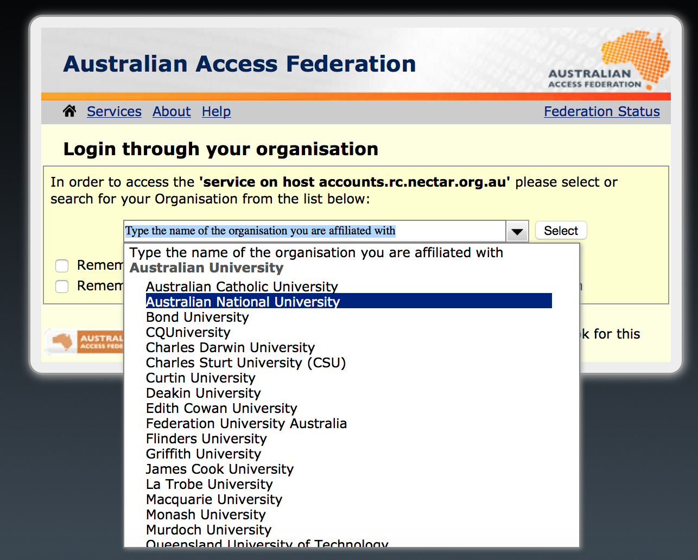
Click “Log in” on the first window. Then, select your organisation from the drop-down menu (you may also type in the first characters of your organisation name in order to find it quicker). You will be redirected to a page where you can type in your username and password. This should in most cases be the username and password you usually use to access your account at your University or Research Organisation.
Click OK for all terms and conditions if logging in the first time (you will not have to do this every time).
Step 2: Open the Launch Dialogue
Go to Dashboard > Instances. A list of your running instances will be listed. If this is the first time you are doing this, the list will be empty. Now click on Launch instance on the top right of the overview.

Step 3: Selecting resources
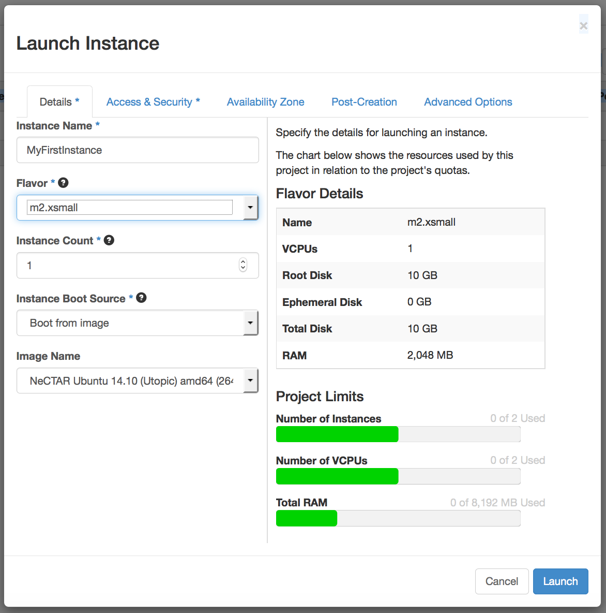
Choose the name of your instance and the “flavor”. Different flavors allocate different amounts of memory and disk space for you. Select the flavors in the drop-down box and information about the resources are displayed on the right side of the window. You may select a few flavors to see the differences between the flavors. For this tutorial, choose the flavor “m1.small”, which offers 30GB of ephemeral storage (we will need this in a later section.
You could launch several instances of the same flavor, but for now we will launch only 1, so leave “Instance Count” at 1. Leave “Instance Boot Source” on “Boot from Image”. Choose the most recent version of “NeCTAR Ubuntu” from the “Image name” list.
NOTE: At the time of writing the image “NeCTAR Ubuntu 14.10 (Utopic) amd64” was used. If you choose a version much newer than this, there may be some differences to the descriptions given in this tutorial. In general, a newer version should work fine with the exercises below, you may only see different text (phrasing) in the terminals command line output.
Don’t click “Launch” just yet… we have to set the security settings first!
Step 4: Ensuring security
Now, we will choose the security settings. Go to the tab “Access & Security”.
We can choose which Security Groups the instance will belong to (see above for explanation about security groups).
We will connect to the instance with ssh. Ssh uses port number 22, so this has to be freed up. Therefore, tick the “ssh” box. We will also publish a little website in a later exercise, which requires http, so tick the “http” box also. To test whether your instance is reachable, we will also need “icmp”.
Note: We can also change the security groups of the instance later on, but it’s convenient to do this now.
Next, we will specify the key for connecting to this instance (that’s the one we just generated).

-
You should have the contents of your public key still in your clipboard, unless you have copied and pasted something else since we did this above. If you have, copy the contents of Nectar_Key.pub again.
-
Click on the plus (“+”) to add a new key.
-
Specify the Key Pair Name. This can be any name, but for simplicity choose Nectar_Key also.
-
Paste the contents into the large text box labelled Public Key (use CTRL+V, or right click in the box and “Paste”).
-
Now, click “Import key pair”. This key will now be available for future use. Next time you launch an instance you can select this key from the drop-down list directly, without having to copy and paste it again. The window closes and you are back to the window to configure your instance.
Step 5 (optional): Choose your Availability zone
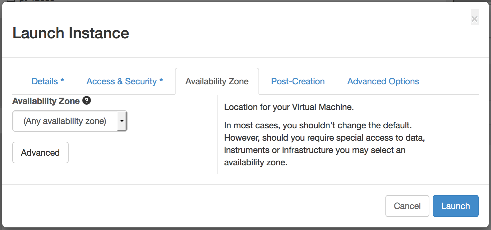 If you need access to specific facilities (e.g. Volume storage), you can manually choose the location of your instance in the “Availability Zone” tab. The Availability Zone is where your instance will be running physically. Unless you know that you need access to specific services, it is recommended to leave this in the default setting, because then the location with the most available resources is chosen.
Step 5: Launching the instance
You can now launch the instance by clicking on the “Launch” button. You will get back to the overview of your instances. You will see the status of your instance in the overview. You need to wait a few minutes.
The Instance will normally pass from Status “Build” to “Active”. You will see an IP address for your instance (4 numbers separated by a dot). Write it down, or keep this window open so you can see it, as we will need it in the next step to connect to your instance.
Congratulations!!
Your instance is now reachable on this IP address. Your applications can connect to the Ports that you have allowed earlier in the Security Groups.
Connect to the instance
To connect to your instance, you will need its IP address. You should have just written this down, or you can look it up on the Dashboard (Compute > Instances).
In the following text, your IP address is described as NNN.NNN.NNN.NNN, which you will have to replace with your own instance’s IP address.
To get a secure connection, we need to log on to the instance via ssh.
Connect via ssh
Step 1: Test connectivity
First, let’s do a little test to see if your instance is reachable. On Linux/Mac, you can use the command line shell that you have just opened.
On Windows, open your Windows command line.
Use the terminal to try to “ping” your instance (checking that you can reach it):
ping NNN.NNN.NNN.NNN
replacing the N’s with the IP address of your NeCTAR instance you noted above.
The ping command just sends a simple signal to your instance and checks whether it responds. If the ping does not work, then most likely neither will any of the following steps. The ping has worked if you get a response every few seconds, e.g.
PING 144.6.227.170 (144.6.227.170) 56(84) bytes of data. 64 bytes from 144.6.227.170: icmp_seq=1 ttl=49 time=354 ms 64 bytes from 144.6.227.170: icmp_seq=2 ttl=49 time=358 ms
Step 2: Logging in
We will now log in to our instance using ssh with the private key (the username might be different depending on the image you launched).
Follow the instructions below for the operating system of your local computer.
Note: If the ping has worked but the SSH connection does not work after following instructions below, follow the troubleshooting steps in the Appendix.
Linux/Mac
We will need a command line shell (a “Terminal”) in this exercise. On Linux and Mac, you have a built-in terminal. Open it now (if you are unsure how, refer to the notes in the introduction).
Go to your command line and type
ssh -i Nectar_Key ubuntu@NNN.NNN.NNN.NNN
using your own IP address instead of NNN.NNN.NNN.NNN. The command line will ask you to establish the authenticity of the server. Type “yes”.
You will then be asked for your passphrase (that’s the one you chose when generating the SSH Key).
Note: If you named your key other than Nectar_Key, you should replace this with your own private key file name here. If you saved the private key in another folder, you will have to specify the full path to it (e.g. ssh -i /home/john/yourkeyfolder/Nectar_Key NNN.NNN.NNN.NNN).
On a Mac:
You may have to specify the full path to the key. If the above does not work, try instead:
ssh -i $HOME/.ssh/Nectar_Key ubuntu@NNN.NNN.NNN.NNN
Our instance has a default username that we need to specify when we log in. In this tutorial, we chose a Ubuntu Image when launching the instance. At the time of writing, the user name for Ubuntu is “ubuntu”. Other NeCTAR images may expect different usernames.
Try using root instead of ubuntu (“root@NNN.NNN.NNN.NNN”) for other Operating Systems. For Fedora, the user name may be ec2-user. The right user name for the image you chose is documented in the NeCTAR Image_Catalog.
Well done!
Now, you should be connected to your instance and your ssh terminal command line is ready to use.
Windows
On a windows system, we will use the PuTTY terminal to connect to the instance. We first have to set up our PuTTY session to include the details of our instance, including the keys we are using.
Double-click on the file “PuTTY.exe” which you downloaded when you created the SSH key.
In your PuTTY Window, type your instance’s IP address into the “Host” field (you should have taken a note about the IP address earlier, if not you can find it on the Dashboard: Go to Compute > Instances).

Then, select the “Data” category in the navigation window. Here, we will have to specify the username. Choose “ubuntu” as your username. Leave the other fields on default settings.

Our instance has a default username that we need to specify when we log in. In this tutorial, we chose a Ubuntu Image when launching the instance. At the time of writing, the user name for Ubuntu is “ubuntu”. Other NeCTAR images may expect different usernames.
Try using root instead of ubuntu for other Operating Systems. For Fedora, the user name may be ec2-user. The right user name for the image you chose is documented at the NeCTAR Image_Catalog.
Next, click on the “SSH > Auth” sub-category. There is a field labelled “Private key file for authentication”. Click on the “Browse” button:
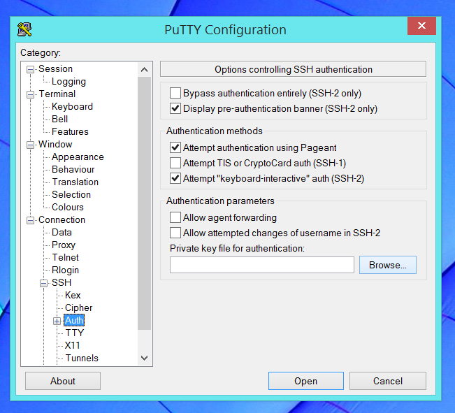
In the browse window that comes up, select the private SSH key file that you saved on your computer earlier (we named it Nectar_Key)
Note: If you have generated your ssh key on a Linux system and now need to convert it to Windows, see how to do this in the Appendix.
Instead of converting keys, you can also simply create a separate set of keys to use with PuTTY. In this case, you have to add the new key as an authorized key on the instance. See the Appendix for instructions on how to do this.
Now, return to the “Session” screen in the left navigation window. This is the screen we started at. We will save our settings (the “session”), so that in future we don’t need to type in all the details again. In the “Saved Sessions” section, choose any name for this session so that you can remember it, for example “MyNeCTARInstance”. Then, click on the “Save” button.
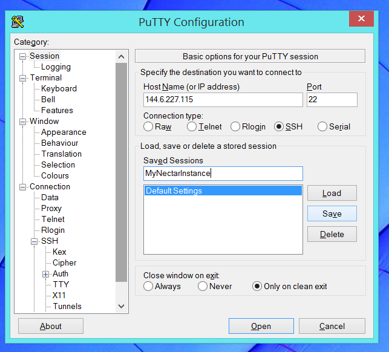
Now, connect to the instance by clicking the “Open” button. The first time that you connect, you will be asked to verify the identity of the remote server. This is expected the first time you connect to a new server, so you can select “Yes” to continue. You will be prompted for a passphrase. Type in the passphrase that you used to create the SSH key earlier on.
Every time you connect to the instance via Putty, you will have to type in your passphrase. This may get a little cumbersome, so note that there is a tool called Pageant that you can get on the same page where you downloaded PuTTY. Pageant is an SSH authentication agent. It holds your private keys in memory, already decoded, so that you can use them often without needing to type the passphrase every time. It also eliminates the need to explicitly specify the relevant key to each user account, if you use more than one account to log into a server.
We will not use pageant in this tutorial, but you may be interested to read up on how to use it. You can find instruction in the Appendix.
Well done!
Now, a black Terminal window should open and your command line is ready to use.
Configuration and control
Welcome to your new virtual machine!
First of all, we want to make sure our system is updated. On Debian and its derivatives, like Ubuntu, you can update your packages with the commands:
sudo apt-get update
sudo apt-get upgrade
The first command refreshes the package information, and the second upgrades your system.
There are several ways to upgrade your system. The command above (sudo apt-get upgrade) simply updates the existing packages. You can also update more intelligently. Here’s a description of the various upgrade commands (extracts from the apt-get manual):
-
apt-get upgrade: upgrade is used to install the newest versions of all packages currently installed on the system [..]. Packages currently installed with new versions available are retrieved and upgraded; under no circumstances are currently installed packages removed, or packages not already installed retrieved and installed. New versions of currently installed packages that cannot be upgraded without changing the install status of another package will be left at their current version.
-
apt-get dist-upgrade: dist-upgrade in addition to performing the function of upgrade, also intelligently handles changing dependencies with new versions of packages; apt-get has a “smart” conflict resolution system, and it will attempt to upgrade the most important packages at the expense of less important ones if necessary. So, dist-upgrade command may remove some packages.
-
apt-get full-upgrade: full-upgrade performs the function of upgrade but may also remove installed packages if that is required in order to resolve a package conflict.
You may also want to change the password for the user ubuntu:
passwd
Note: You will not be prompted for your ubuntu user password when you connect through ssh. This is because in the default configuration, the ssh key is regarded sufficient for authentication purposes. Therefore, each user on the virtual machine should have their own ssh key.
More importantly, you should change the password for root access (administrator rights), especially if you are planning to add more users to the virtual machine:
sudo passwd root
and type in the new password twice.
If you do not change the root password, and later add other users to the VM, any user will be able to log in as root and perform administrator tasks (using the command su -).
When you create new user accounts, and you do not want them to have root access, make sure you do not include them in the user group sudo. Any user which is member of this group can execute administration tasks.
Having problems connecting? The Appendix includes a section on troubleshooting.
Using a command line text file editor
Sometimes, we will have to edit files on the instance via the command line. Because this is a command line, we cannot use programs like Word or iNote to edit a file. Instead, we have to use a command line editor.
There is a large number of command line editors available. A simple and easy-to-use editor is nano. Vim is also popular but a bit more difficult to use for beginners.
If you want to edit a file, type
nano <path-to-your-filename>
The terminal changes into a simple editor. You can edit the file and then exit the editor with Ctrl+X. A prompt will come up asking if you want to save the file, type ‘Y’ to confirm this.
We will create a file to test this. Type
nano MyFile.txt
and hit enter to confirm the command. Write a little story or anything you are just thinking of into the file. Then, hit Ctrl+X to exit, and confirm with “Y” that you want to save the file. Now, type
ls
and hit enter to confirm the command. You will see the list of files that are there. The list should contain a file “MyFile.txt”. You may print the contents of the text file onto the terminal by typing:
cat MyFile.txt
and you should be able to read your message in the terminal. Exit again with Ctrl+X.
Restarting your instance
Sometimes, you may want to restart your instance. For example, to make sure everything works correctly after you installed some packages. You can do this in the Dashboard.
Step 1. Reboot on the Dashboard.
Go to the Dashboard and click on Instances on the navigation panel on the left to see your instance. On the right side of your instance, you can open up a drop-down box.
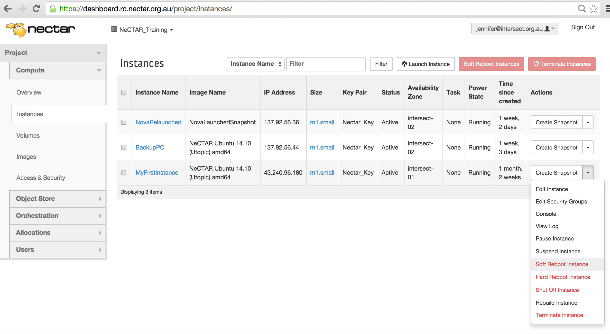
click on “Soft Reboot Instance” (a soft reboot is what we know as a reboot. A hard reboot forces the reboot in case the soft reboot does not react).
Step 2. Re-connect ssh client.
Your ssh session, or the PuTTY session if you are on Windows, will have disconnected now, so you have to re-connect. On Windows PuTTY, you should have your login session still saved so you just need to load these settings up. On Mac and Linux, simply re-run the ssh command (Tip: you can browse the command line history with the “up/down” arrow keys in your ssh terminal. Your ssh command should be in there so you don’t have to type it again).
Tip for Unix/Mac
You can make your life a bit easier by saving your configuration for the ssh connection. This will avoid always having to type your IP address. There is two options to do this: a) specifying all details or b) creating an alias for your IP address. Then, instead of typing in the full ssh command every time, you will just do the following:
Option 1:
ssh MyNectarInstance
Option 2:
ssh -i Nectar_Key ubuntu@MyNectarInstance
Option 1
You need to edit a file on your local computer (not on the instance!).
Open a new terminal on your computer. Then, open up the file ~/.ssh/config using your favourite editor, for example:
nano ~/.ssh/config
and add the following contents:
Host MyNectarInstance HostName NNN.NNN.NNN.NNN User ubuntu IdentityFile ~/.ssh/Nectar_Key
Again, replacing the N’s with your IP address.
You can choose any other alias name instead of MyNectarInstance. Save the file and close it.
From now on, you can connect with the command:
ssh MyNectarInstance
or, if you chose another name, replace MyNectarInstance with it.
Option 2
You may also just alias your IP address in the system’s host file.
On Unix systems and on Mac 10.2 and newer, the file to edit is usually the file /etc/hosts. On Mac 9 and earlier you can find it in the Preferences or Systems folder.
Open this file in your favourite editor, for example:
sudo nano /etc/hosts
and add the following line:
NNN.NNN.NNN.NNN MyNectarInstance
replacing the N’s by the IP address of your instance. You may also choose another name instead of MyNectarInstance. Next time you ssh into the instance, you can connect with:
ssh -i <path-to-your-keyfile> ubuntu@MyNectarInstance
Note this is the same command we used earlier, but you can type MyNectarInstance instead of your IP address. You will be asked to accept the authenticity of the host again. Answer with “yes”.
Connect to a remote desktop
Using the command line may not feel very intuitive, especially for beginners. Aside from that, sometimes we need to run software that has a graphical interface.
As an alternative to connecting with a ssh terminal, we can also connect to the desktop of our instance and get a graphical interface as we know it from our own computers. A remote desktop login allows users to connect to their desktop while being physically away from their computer.
You can also connect to your own home computer’s desktop while you are away, if you set up your home computer accordingly with remote access. This may be a bit difficult to do from your organisation or from your home, as you need access to the computer via the internet from outside, which may require the permission of firewalls used on the premises, and you need a fixed IP address.
However on your NeCTAR instance, it is easy to set up a remote desktop, because the instance is already accessible from outside.
Some remote desktop solutions allow only one user to see the desktop at the same time. Other software also allows desktop sharing in which several users can see a desktop simultaneously. Such a shared desktop can be used as a platform for real-time collaboration. This mostly requires a separate setup, which is not part of this tutorial.
To connect to a remote desktop, the remote machine (your instance) has to have a remote desktop server installed and running. On your home or office computer, you have to install a remote desktop client (sometimes called “viewer”) which connects to the remote desktop server on your instance. The client then displays the desktop of your remote machine. It is like a “window” into your instances desktop; The desktop environment itself is running on the instance.
Terminals on remote desktop vs SSH terminal
We have previously connected to the instance with via a ssh terminal. When we get a window into the desktop of our instance, we can open a terminal on the desktop as well.
The image below shows both (1) a ssh terminal (left) and (2) a desktop with an open terminal (right):

So what is the difference between the two terminals? When you type commands in either of them, it will have the same effect. They are both terminals that you can use to control your instance. However, the difference is that
-
The ssh terminal is set up through a secure ssh communication line with your instance. If we use a ssh terminal, only text is being transferred (the commands you type and the responses you get). This is very fast, but you cannot run graphical applications, because you can only communicate with the instance via text.
Note: it actually is possible to run graphical applications via the terminal as well, with some disadvantages. This is discussed later in this module, but this is very slow and usually not recommended. -
The terminal on the remote desktop is connected securely as well (at least the way we will set it up in this tutorial). But instead, the communication includes graphical data and events (e.g. your mouse clicks, and the windows displayed). This is slower than using the terminal only, but you may find it is still fast enough to work with. You can run graphical applications and use the OS menu to find programs and change settings, which may be easier for many of us.
Remote desktop protocols
When you are connected to a remote desktop, everything you do to interact with the system, for example clicking the mouse, moving a window or typing on your keyboard, is communicated to the remote machine (in this case, your instance). For this kind of communication, computers use “protocols” which are designed for this purpose.
The type of protocol determines properties of the remote desktop, for example how secure it is, how fast it works and what kind of desktop environments it supports. In this tutorial we will use two different protocols to connect to our remote desktop: NX and VNC.
Some wide-spread protocols include:
- RDP (Remote Desktop Protocol)
- Originally developed by Microsoft to connect to Windows machines.
- The protocol is not very secure, therefore setting up “tunneling” through a secure connection is required.
- NX
- NX compresses the data to minimize the amount of information transmitted. NX also caches data to make the session as responsive as possible. For example the first time a menu is opened it may take a few seconds, but on each subsequent opening the menu will appear almost instantly. Therefore, NX allows fast speed even with slow internet connections.
- NX uses the SSH protocol to send its data and is therefore secure.
- VNC (Virtual Network Computing)
- The VNC Protocol (called the RFB protocol) is very simple. It is based on graphic primitives from server to client (“Put a rectangle of pixel data at the specified X,Y position”) and event messages from client to server. This makes VNC a bit slow.
- By default, this is no secure protocol. Therefore, you need to “tunnel” the connection via a secure SSH connection to make it secure. This may seem a bit complicated to achieve for beginners. Alternatively, some clients like UltraVNC) support the use of an encryption plugin which encrypts the entire VNC session.
- Because VNC is quite popular, the client software options are pretty good for Unix and Windows platforms.
- VNC allows multiple users to see (share) the same desktop.
- To transfer files, printing or audio requires separate services. The VNC only handles displays and inputs, such as interaction with keyboard and mouse.
- Users may access desktops with VNC through their Web browser, without needing to install separate viewer applications. VNC displays a desktop within a browser window by running a Java applet, and this facility should work on any system that has a JVM installed.
- VNC does not support the newer “3D desktops” (e.g. the newer GNOME/Unity or KDE desktops environments. The desktop environments have to be run in classical 2D mode for it to work (e.g. GNOME Flashback).
- To learn more about VNC, here is a good article
Free remote desktop client and server software includes:
- Vnc4server
- the main VNC server software for Linux.
- UltraVNC, RealVNC, TightVNC
- popular clients for VNC sessions
- X2Go
- An open source product which is pretty fast.
- It uses the NX protocol and is operates through a secure SSH connection
- Supports remote audio, printing, clipboard, file sharing etc.
- Can share a user’s session remotely, but it has to be set up separately.
- It is fairly easy to set up
- There is even a readily available browser plugin to make remotely controlling another PC possible from a web browser. But: Port forwarding and Dynamic DNS are recommended if you’re using this over the Web.
- Due to the use of older NX libraries, it has problems with the newer “3D Desktops”, e.g. Gnome/Unity and newer KDE desktop environments. Only the older environments are supported.
- No Android / iOS client available, unless using the web interface
- NX Server, free edition
- Easy to set up
- Not very fast
- Only free to 3 users
- Can’t share a user’s session remotely.
- FreeNX Server
- A Server for the NX protocol, similar to NX Server, but free.
- No real good documentation, not easy to install
- Can’t share a user’s session remotely.
- NoMachine)
- A client to connect to an NX server (e.g. FreeNX).
- Not free for commercial use (only private)
- Simultaneous connections from only 2 users.
- NeatX (outdated)
- Google has released NeatX, a complete independent implementation of the NX protocol.
- Neatx was developed as part of an internal project which has now finished. It had no releases and is not being actively developed.
- Can’t share a user’s session remotely.
- xrdp
- uses the RDP protocol (which is not very secure)
- Servers are also available for Unix and Mac.
Commercial products may be better and easier to set up than the free software listed above, but they come at a cost (at least for commercial use). Popular software includes:
- TeamViewer
- supports Windows, OS X, Linux, Android, and iOS
- free for personal use
- setup very easy
- pretty expensive for commercial / business use
- Splashtop
- supports Windows, OS X, Linux, Android, and iOS
- allows you to stream audio and video across computers with minimal latency
- very easy to use and set up
- RealVNC
- The “Official” VNC software
- Offers its client and server apps for Windows, OS X, Linux, Android, iOS, Chrome
- free for basic individual private use, but added features and support come at an extra cost.
Wikipedia offers a good comparison of remote desktop software.
The options which are easiest to set up and provide a fairly good user experience are X2GO (using the NX protocol) and VNC. In the following exercises, we will see how we can set up both of these options using freely available software.
VNC vs X2Go
X2Go uses the NX protocol, and VNC the RFB protocol. This makes for different properties and advantages of each approach.
The VNC protocol is pixel based. This can make it a bit slow. One advantage is that it is widely used, and several available remote desktop products use this network protocol. This means that you may use any VNC viewer (client) to connect to a system that offers remote access with the VNC protocol.
The NX protocol (used by X2Go) has a better understanding of the underlying graphic layout than VNC (which is pixel-based). Therefore, it is often more efficient (faster).
In summary:
VNC:
- inherent support of different platforms: you can install it on Unix and Windows servers
- is widely used, hence there is a large number of tools
- is slow
- is inherently insecure, it takes a bit more work to set up a secure connection
NX (X2Go):
- is fast
- easily integrates with security plugins
- there are not many well-maintained servers and clients available (X2Go is one of the few)
- Servers can only be installed on Unix servers, for Windows/Mac there are only clients (no servers)
- On Mac computers, installation of the X2Go client is a bit more work than on Windows and Linux, and usage can also be a little slower.
Install a desktop environment
First of all, for either of the options (VNC or X2Go), we need to install a desktop environment on our instance (Remember: The desktop actually runs on the instance, you only get an interactive window to it on your local computer. So we need to install a desktop on your instance).
A desktop environment is what we use to graphically interact with a system (it provides the desktop, windows that open up and symbols you can click on to start a program). Windows and Mac OS have only one desktop environment, but in most Unix-based systems you can choose from several environments. Popular choices are Unity, Gnome and KDE. There are also popular simple and light-weight environments called LXDE, XFCE, Mate and more.
You may install several desktop environments, but you only need to choose one to start with. The following desktop environments are being discussed in this section:
-
LXDE
-
XFCE
-
Gnome
-
KDE
If you are unsure which desktop environment to choose, we recommend you start with LXDE.
Unfortunately, there is no remote desktop solution that supports all desktop environments. The desktop environments which are currently not supported for remote connections are the ones using 3D desktop acceleration. This affects e.g. Unity and Gnome3. All traditional remote desktop approaches (VNC, NX etc.) fail to work with this. Some versions of Gnome can be run in “flashback” Mode (with the 3D acceleration switched off), but that can be a bit tricky to set up and does not necessarily work. We will therefore discuss only the desktop environments which do work.
Note: This tutorial is assuming you are using Ubuntu 14.10 (UTopic), however later versions may also work with the same instructions. When in doubt, links to external documentation are given at the relevant places.
LXDE
This light-weight environment is easy to install and works well for remote connections.
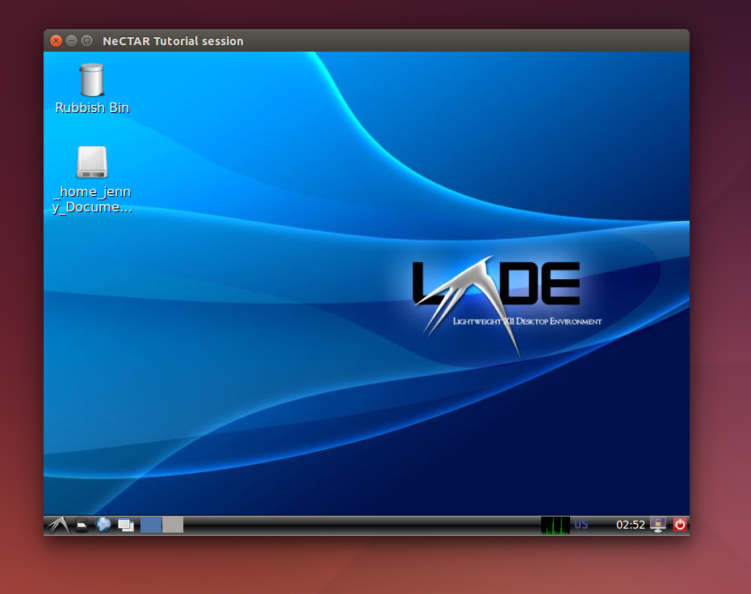
Install the LXDE environment on your instance by typing into your ssh terminal:
sudo apt-get install lxde
XFCE
Install the XFCE environment by typing into your ssh terminal
sudo apt-get install xfce4
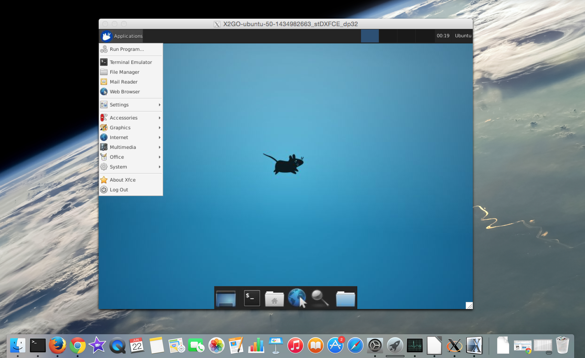
GNOME
Gnome will have to be run in Flashback mode to disable the 3D acceleration which is not supported in VNC or X2Go (see for example this official documentation and this one on ubuntuusers.de). X2Go is only compatible with Gnome versions earlier than 3.12 (see x2Go documentation), and ideally earlier than 3.08. The Ubuntu version we use in this tutorial has Gnome 3.12.2, so you cannot use Gnome with X2Go with the Ubuntu version used in this tutorial. However, you may still get Gnome working with VNC by following the instructions below.
You can find out your Gnome version (after you installed it with following instructions) by typing in your ssh command line:
gnome-shell --version
If you are using a version older than 3.12, you cannot use Gnome with X2Go (you may run into trouble with versions older than 3.08 too). However, you may still get it working with VNC.
To install gnome in “flashback mode”, follow these instructions:
-
Install the gnome environment by typing into your ssh terminal:
sudo apt-get install gnome-core
Alternatively, if you want to have some apps like Gimp, LibreOffice etc. pre-installed, instead of the command above, type:
sudo apt-get install gnome
(this will take longer as more packages are downloaded).
Confirm the installation of the package with ‘Y’.
Hit [Enter] to confirm the message that comes up.
Then, you have to select the default display manager. It does not really matter which one you choose. The correct display manager will be started by your remote client anyway. LightDM or GDM are display managers for Gnome. If unsure, just select LightDM. -
To switch on flashback mode , we have to install a package and disable the newer scrollbars. Type:
sudo apt-get install gnome-session-flashback -
[This step is not necessary on the Ubuntu version used in this tutorial]
sudo apt-get purge overlay-scrollbar gsettings set org.gnome.desktop.interface ubuntu-overlay-scrollbars false -
[This step is not necessary on the Ubuntu version in this tutorial]
You might also need the following package on older Ubuntu versions (if in doubt, install it anyway, it should already be installed and then it does nothing)
sudo apt-get install xfonts-base
KDE
Note: Only versions earlier than KDE 5 are supported in X2Go. With the ubuntu version used in this course, you may use KDE.
You can find out your version of KDE (after you installed it with following instructions) with:
kde4-config -v
Install the desktop environment by typing into your ssh terminal:
sudo apt-get install kde-plasma-desktop
Alternatively, if you want to have some more apps pre-installed (this will take longer and take up more space), instead of the command above, type:
sudo apt-get install kde-full
Confirm the installation of the package with ‘Y’. This may take a while as a lot of packages need to be downloaded.
Hit [Enter] to confirm the message about installing KDE. Then, you have to select the default display manager. It does not really matter which one you choose if there are several options. The correct display manager will be started by your remote destkop client anyway. KDM is the display manager for KDE, so if unsure, just select this one.
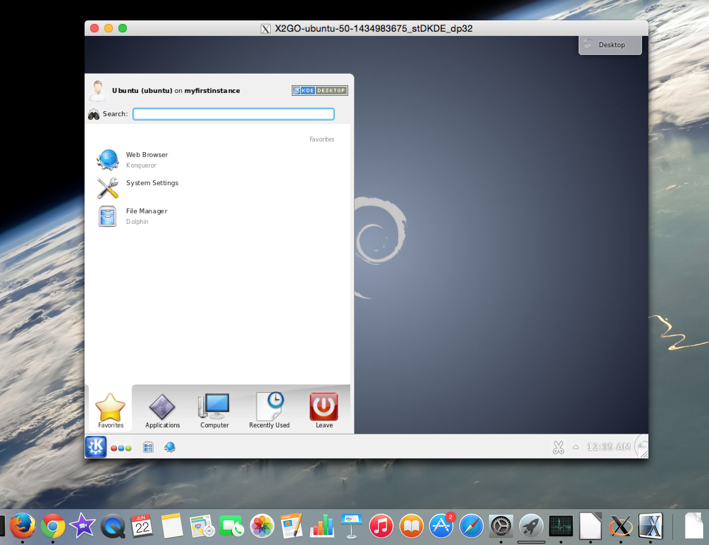
Other desktop environments
There are also other desktop environments, for example MATE, which we will not discuss further in this tutorial.
Connect with X2Go
We will first install the X2Go Server on your instance, and afterwards the X2Go client on your local computer. Then you can access the virtual machine’s desktop with the X2Go client.
Server installation
In this tutorial we assume you are using the most recent release of the Nectar Official Ubuntu. If you are using an earlier version of Ubuntu, or another Linux distribution, you may need to do other steps. This will be commented upon in the following instructions at the relevant places. See the official X2Go documentation for details on the steps to perform.
-
Add the X2Go repository and refresh the software package system by typing into your ssh terminal:
sudo add-apt-repository ppa:x2go/stableand confirm this with [Enter]. Then, type:sudo apt-get update -
Install the X2Go server. Type into your ssh terminal:
sudo apt-get install x2goserver x2goserver-xsessionConfirm the question on whether to use up the said disk space with ‘Y’ - We now have to install extra bindings for our desktop environment which add extra features for X2Go (e.g. file sharing). Follow the instructions for the environment you want to use (if it is not listed, see official documentation)
-
LXDE: In your ssh terminal, type
sudo apt-get install lxdesudo apt-get install x2golxdebindingsNote: If the installer package complains about unmet dependencies and suggests to remove lxde, say yes to this. Afterwards, re-install lxde again with the command -
GNOME: GNOME only works for versions earlier than gnome 3.10, better earlier than gnome 3.08, as pointed out earlier). In your ssh terminal, type:
apt-get install x2gognomebindings -
KDE: In your ssh terminal type:
sudo apt-get install plasma-widget-x2go
-
- The X2Go server should now be running. You can check this with typing into your ssh terminal:
service --status-all | grep x2goThe result should show a line like this:[ + ] x2goserver
If the service is running. If it isn’t, you can start the server by typing:
service x2goserver start
If in doubt, or anything is not working, try restarting your instance before you try anything else (we have already restarted the instance here).
Client installation
You will now install the X2Go client on your local computer. Depending on which OS you are using, instructions will differ. Go to the instructions below for your OS. If you have a platform not listed here, you can find additional documentation on how to install the client on the official X2Go website. A good instruction can also be found here.
-
Ubuntu: Install the client by typing into a terminal on your local computer:
apt-get install x2goclient -
Windows: Download and install the newest windows client from the X2Go website. Follow the installation wizard’s steps, you may keep all default options.
-
Max OS X:
-
The X2Go Mac client uses the OS X X11 server called XQuartz. If you don’t have Xquartz yet, you can get it on the XQuartz website. Download and install it. Note: there is also a download of the file on download.cnet.com. Search there for “XQuartz”. If the download speed on the original website is painfully slow, you may download XQuartz from here. Just make sure you download the newest version.
-
At the end of the installation, it will point out that you will have to log out and log back in again for changes to take effect. You can also do this after we have changed some settings in the next step.
- You have to enable a few settings for Mac.
- Start the XQuartz server. You can find it in the spotlight search (open it with Cmd+Space), and type in “xquartz” to find it. Click on it to start.
- 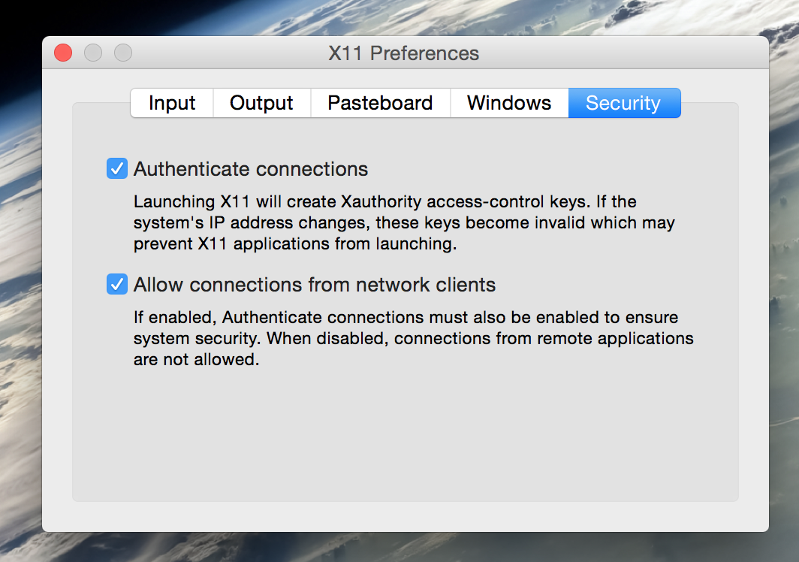 In the Preferences, go to the Security tab and enable “allow connections from network clients”. NOTE: If you start XQuartz after already having logged out and in again, you can access the settings (or exit full screen mode) with CMD + , (command and comma) Important: Because above instructions may change any time, please refer to the most current X2Go documentation
- Download and install the newest X2Go client from the X2Go Website.
-
Connecting the X2Go client
We will now start the X2Go client application that you installed in the last step and connect it to the instance.
Step 1: Start the client
On Linux, search in your application menu, or simply type into your local computer’s terminal:
x2goclient
On Windows and Mac, start the application as you do with any other program (find the x2goclient application). E.g. on Mac, bring up the spotlight (Cmd + Space) and search for “x2goclient”.
Step 2: Start a new session
The session settings should come up right away if you are using the client for the first time. If you are not, click on “New session”, which is the top left button that looks like a blank sheet of paper.
Hint for Mac users: the X2Go windows may be sized too large for your screen initially, so you cannot see the usual “OK” and “Cancel” buttons in the dialogue windows. To resolve this, you simply have to select the window by clicking on the top window bar and holding the left mouse button to move the window a little bit. When you release the mouse button, the window should be automatically resized to fit your screen.
The session preferences window should look similar to this:
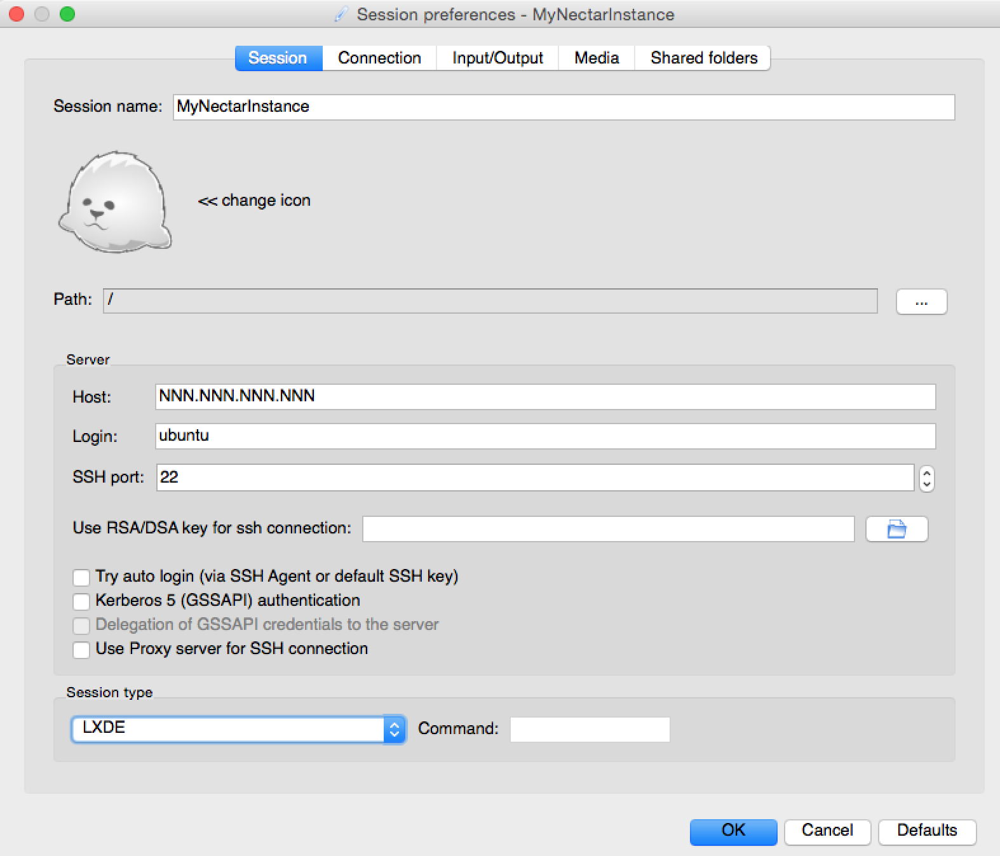
-
Specify your session name in the first field (In the screenshot, we called it “NeCTAR Tutorial session”).
-
In the “host” field, type in your IP address
-
In the “Login” field, specify the username (in this tutorial, it is “ubuntu”).
-
Select your private SSH key in the field “Use RSA/DSA key for ssh connection”. You may click on the little folder symbol behind the field to browse for your private ssh key file. Note for Mac/Linux: earlier in this tutorial, we have put the key in the .ssh folder in your home directory. If you cannot see this directory, you have to create a shortcut to it. Open a terminal on your local computer, and type in your local computer’s terminal:
ln -s ~/.ssh ~/sshYou should now have a folder called “ssh” in your home directory which you can see from the “select file” dialogue. -
As a “Session type”, select the Desktop environment you installed earlier (e.g. LXDE, Gnome, KDE). You may also have installed several desktop environments, in this case select which one you wish to start.
-
Click “OK” to get to the X2Go Start Window. If asked whether to trust the host, click “Yes”.
Step 3: Connect to the desktop
We will now connect to our remote desktop. You should now be seeing the X2Go Start Window:
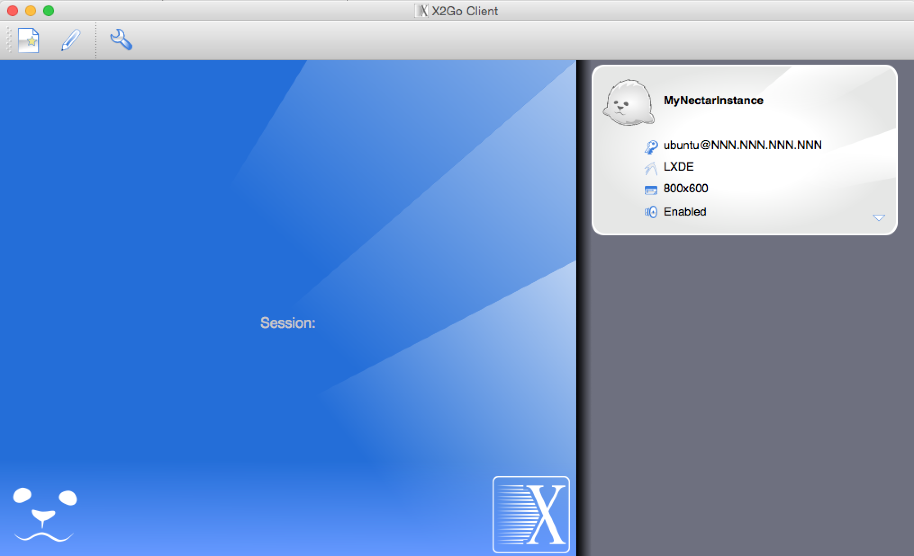
On the right side of the Window, you can see a shortcut to your session. Note that you can quickly change the desktop environment and screen resolution in the box. Don’t do this now however, let’s first try to connect with the default. You can change this next time you log in.
Click on the box with your session name, and the client is going to try to connect to your instance’s remote desktop. You will have to type in your ssh key passphrase.
This may take a while, especially if it is the first time you connect. Don’t get impatient. This is a good time to grab a cup of coffee.
A window will then come up which shows your desktop. Below is an image of an example when XFCE was used:

You can increase the screen size and the resolution of your desktop should adapt to it. Resizing the window can sometimes be a bit slow, therefore you may try different screen resolutions in the login box (which displays your session name) so you don’t have to resize the window every time.
To close your remote desktop, you should log off. This is in most desktop environments a power button somewhere on the desktop, or it is accessible with a right click on the desktop. Choose “logout” as an option, not “restart” or “shutdown”. If in doubt, just close the window in which the remote desktop is displayed (this is the “dirty” option, but it will also work).
When you log back in, you don’t have to specify a password for the ubuntu user, as we are using your ssh key instead.
Important Note if you are using KDE:
KDE does not adapt the screen size that we set in the client. Therefore, we have to disable the “KScreen KDED module”. We will do this right away.
-
On your remote KDE desktop, go to “system settings”. You can right-click on the desktop and then select “Run command…” from the drop down.
-
In the text input field that comes up, type “System Settings” and the drop-down should show the System Settings which you can click on.
-
Go to System Settings > Startup and Shutdown > Service Manager, and uncheck “KScreen 2”.
-
Log out (Right click on Desktop > Leave > Log out) and log back in again (You don’t have to specify a password for the ubuntu user when you log back in, as we are using your ssh key instead). You should now see your full desktop. Your screen size should adapt to what you have set in the session settings of your X2Go client (default is 800x600).
File sharing with X2Go
One nice thing about X2Go is that you can do file sharing between your local computer and your instance easily on the desktop.
Let’s now enable file sharing so we can drag and drop files between our computer to the instance’s desktop.
Step 1. Enable file sharing
We have to enable file sharing for our instance’s user “ubuntu”. For this, you have to add the user to the group “fuse” on your instance. Go to your ssh terminal (or open a terminal on your remote desktop) and type:
sudo addgroup fuse
sudo adduser ubuntu fuse
Important if are using a Mac:
You also have to enable remote login to support file sharing.
To enable file sharing, you also have to change your system preferences. Go to the Apple (on top left of your screen) > System preferences, and then select “Sharing”:
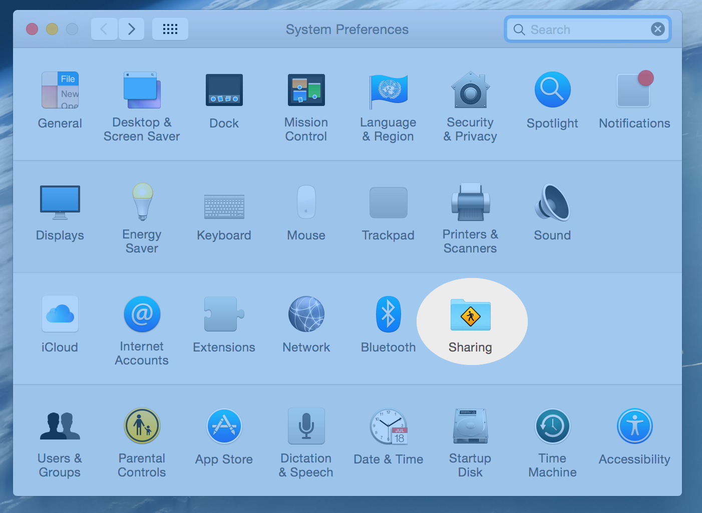
Activate the checkbox for “Remote login”:

Should you have problems connecting in the following steps, try restarting your Mac computer for the changes to take effect.
Now, we have to configure the X2Go client session preferences to enable file sharing.
First, create a folder on the desktop (or elsewhere if you like) which you are going to use as our “shared folder”. Name it for example “x2goSharedFolder”.
Think of this folder as a place where you can put files which you can then access from within your instance also. You can Drag & Drop files into this folder, and it will be easy to access them from your instances remote desktop. Conversely, you can Drag & Drop files from within your remote desktop into this folder, and they will appear on your local computer as well.
Close your remote desktop by logging off (or just shutting the window in which your remote desktop is displayed).
Then, go back to the X2Go Start Window in the X2Go client (If you aren’t there already, click ‘cancel’ button in the login field). You should now see this X2Go Start Window:

Via the little arrow on the right bottom of your session box, select “Session preferences” as shown in the screenshot above. Here you can change preferences of your session. Go to the Tab Shared folders, and click on the little folder symbol to select a folder of your choice which you want to use for sharing (earlier we have named this “x2goSharedFolder” on our desktop):

When you have selected the folder, don’t forget to click on the “Add” button next to the path to your file. Next to the new element added to the box, enable the “Automount” check box. Finally, click “OK” to close the window.
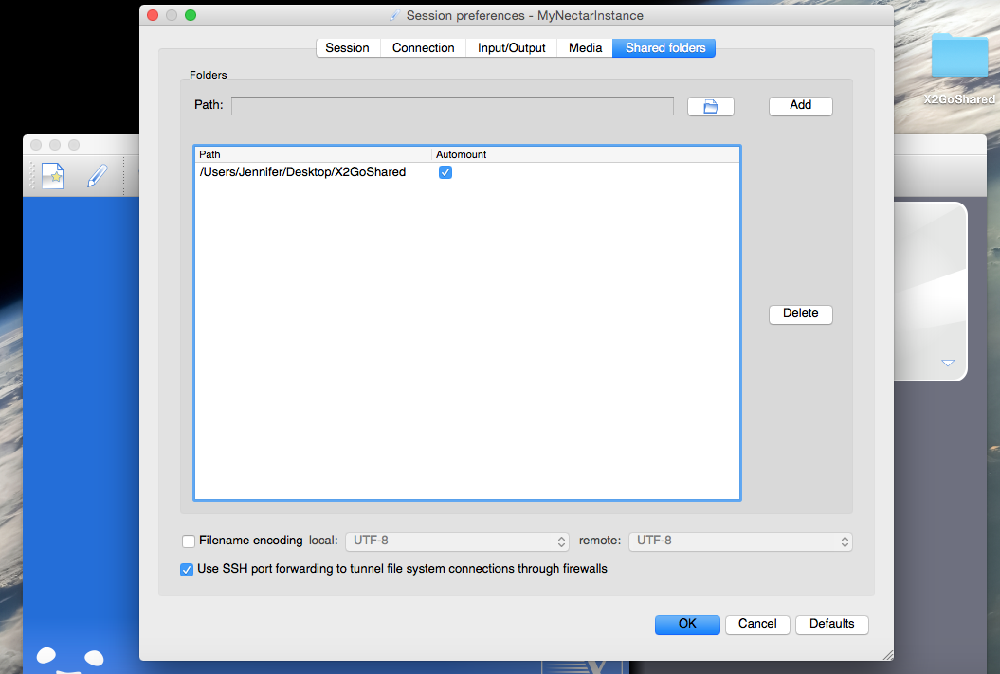
Step 2. Logging in.
Now you can open your remote desktop by clicking on your session box and logging in again. You don’t have to specify a password for the ubuntu user, as we are using the ssh key instead. You will typically find the shared folder of your computer as a link on the remote desktop (see comments below for your desktop environment).
Step 3. Remaining configurations for individual desktops.
Some desktop environments require some extra settings to make file sharing work. Refer to the documentation below for your desktop environment.
If you are using LXDE:
No extra settings required. Your shared folder should be on the desktop now.
If you are using KDE:
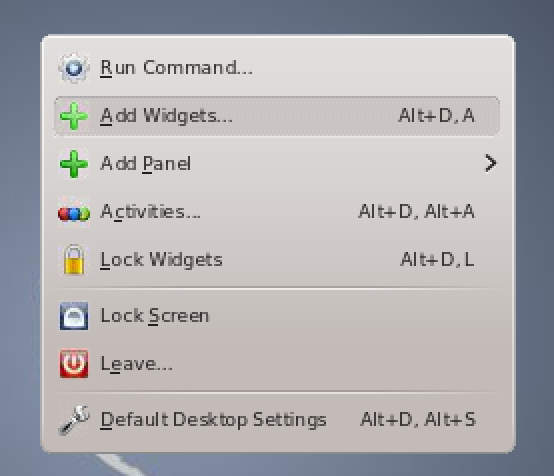 Your shared folder will be visible on your remote machine by adding the “X2Go plasmoid applet” to the desktop. To add the widget, right-click on the desktop and select “Add widgets…”.
Note: You will need to have installed the plasma widget, which we did in a previous step with the command *sudo apt-get install plasma-widget-x2go.
In the search window that comes up, type “x2go” and the x2goplasmoid should come up in the list. Double-click on it to add it to the desktop. 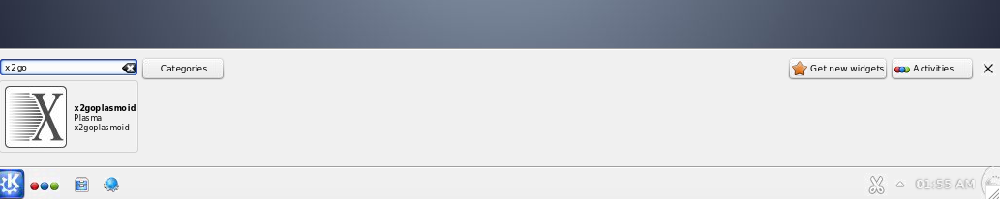
You can now access your shared folder on your local computer via the link on the plasmoid. After you open the folder (double click), you should then see something like this on your desktop: 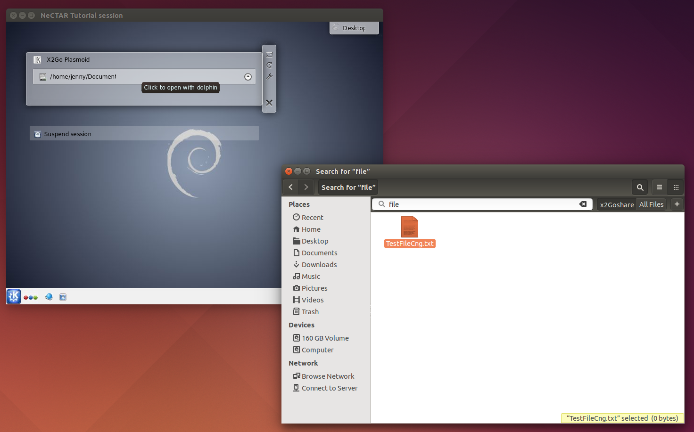
You can change the size of the widget by dragging it if it looks graphically wrong. You need to hover over the right-hand menu of the widget and click with your mouse on the little box in the top:

You can then drag it out to the right side:
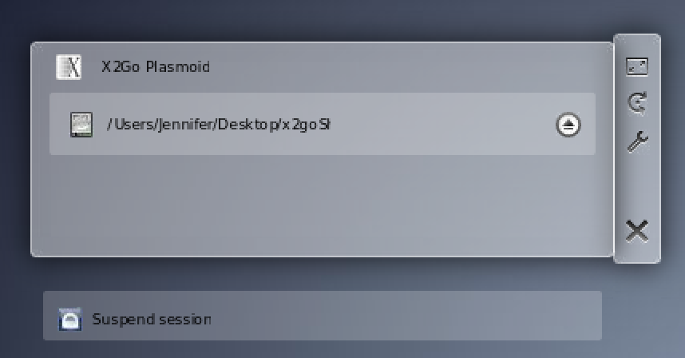
If you are using XFCE:
File sharing has to be set up manually. The shared folder can most likely be found in the folder /tmp/.x2go-ubuntu/media/disk. Check what the name of your folder may be. Type into your ssh terminal:
ls /tmp/.x2go-ubuntu/media/disk
you should recognize your folder name, which is named after the path where it is located on your computer (if you named your folder x2GoSharedFolder, the name should end with this). Then, type
ls /tmp/.x2go-ubuntu/media/disk/<your-folder-name>
to see all the files you have in your shared folder (if your folder is empty, no files will be listed, of course). Right-click on the desktop and select “Open Terminal Here”. Then, type
ln -s /tmp/.x2go-ubuntu/media/disk/<your-folder-name> MySharedFolder
replacing <your-folder-name>> with the name you found above. Be careful with spelling (it’s case sensitive) — if you don’t get the path to the folder right, it will not work. You can also change the name MySharedFolder in the command to something else. When you click on the desktop again, the link to the shared folder should appear.

You can verify where your shared folder has been made available by looking into the file “/var/log/syslog” on your instance. You should see a line that contains the following:*“… successfully mounted
Step 4: Exchange files
Your shared folder can now be accessed both from your instance and your local computer.
First, on your local computer, create a text file in your shared folder (x2GoSharedFolder), write some text in it, and save it to the shared folder.
For example on a Mac:
-
Open TextEdit (Cmd+Space, type “textedit” and open the TextEdit program)
-
Write a message into the window
-
Click “File > Save” and select the shared folder as a place to save the file to. Name it for example “x2goTest”.
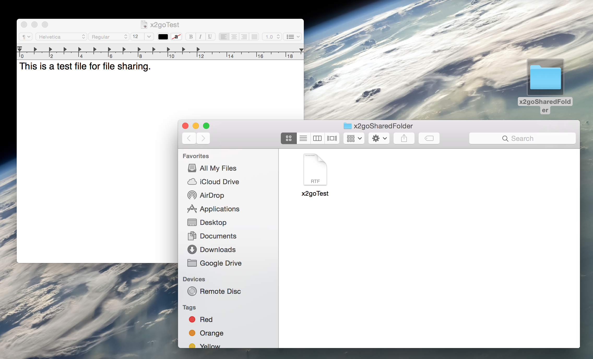
Now, go to your remote desktop. Open your shared folder (you should have found where it is in the last step). For example, when you are using the LXDE desktop environment, your shared folder will be on your desktop.
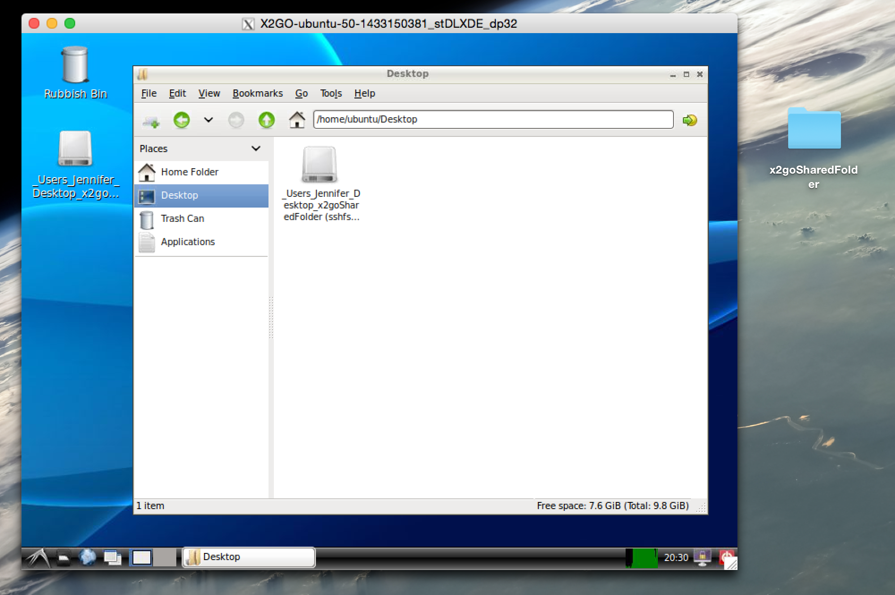
Now if you open the shared folder, you should see the text file you have just created. You may open it to see what’s in there:

Depending on which text editor you used to create your file, it may not look the same on the remote machine. This is because it uses a Linux Operating system, and the default editor on your instance may not open the file with the program which supports this file format. For example, in the screenshot above, you can see that the RTF file we created on a Mac contains formatting instructions as well (you can see it is an RTF file because it is called x2goTest.rtf). Because Linux opens it in a “plain text editor”, you can see the formatting instructions as well. This should not worry you at this point, because we are just testing how to share files with your remote desktop, but this is a good place to notice some differences between operating systems and text files.
Now, we are going to do it the other way round: We are going to create a text file on our remote desktop, copy it to the shared folder, and see that we can access it in our shared folder on our local computer as well.
On your remote desktop, right click on your desktop, and select “Create new > empty file” (This may be called different in your desktop environment, but it should not be too hard to find how to create a new file. If there is no such command on the desktop, open your file explorer, go to your Desktop in the navigation pane on the left, and try to do it there). Name the file “TestOnVM.txt”.

Open the file by double-clicking on it. A text editor will open. Write a message into the file, save it (File > Save), then close it.
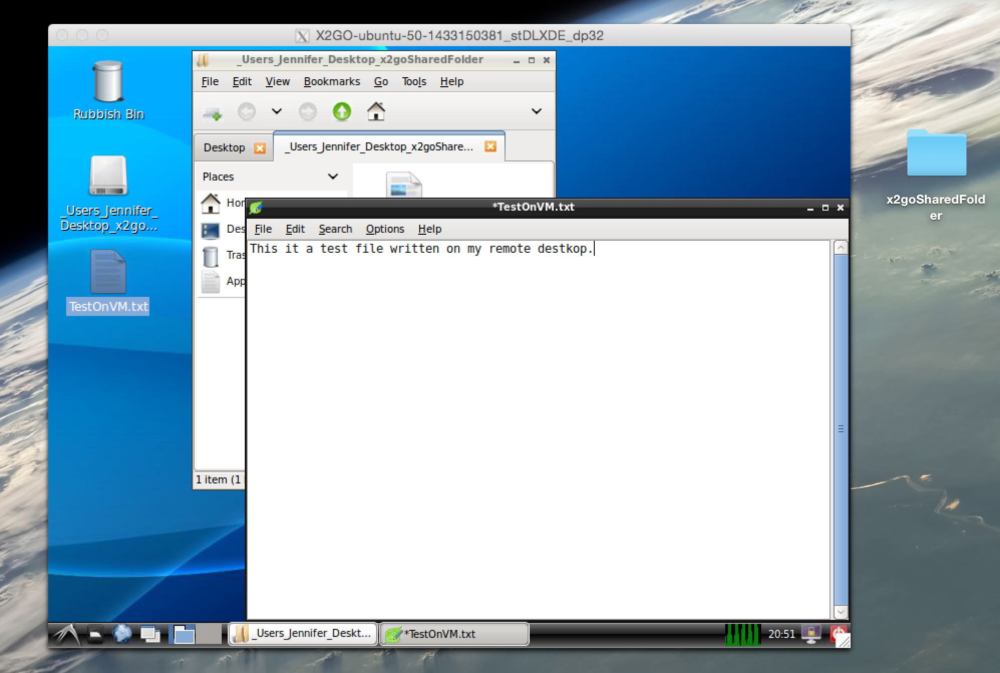
Now, drag the file from the desktop to your shared folder. A message will appear that it is being copied, and then you should see it in your shared folder:

Now, you can open your shared folder on your local machine (the x2goSharedFolder on your desktop).
It will have the new file in it! You may double-click on it to open it and find the message you typed on your remote desktop inside.

Troubleshooting
If you ever run into trouble with the desktop environment, try first to log out and log back in again. If that does not work, you may have to restart the X2Go server. You can do this in the ssh command line of the instance (you may also open a terminal on your remote desktop to do this):
sudo service x2goserver restart
or
sudo /etc/init.d/x2goserver restart
Resources
-
X2Go documentation: Installation of the X2Go server
-
A good article about installing X2Go server on Ubuntu
Connect with VNC
7.3.4. Connecting with VNC
We will now connect to our remote desktop using VNC. We will first install the VNC Server on the instance, and then use a VNC Client (also called “viewer”) on our local computer to connect to the remote desktop.
Install the VNC Server on your instance
In this tutorial, we will use the VNC Server called vnc4server on our instance. For an overview of other servers, refer to the Ubuntu help page.
Step 1. Install VNC server
To install the server, type into your ssh terminal:
sudo apt-get install vnc4server
Confirm installation of the package with [Enter].
Step 2. Configure the VNC server
We will now have to edit a file in order to start up the right desktop environment.
The following instructions have been tested for Ubuntu 14.04 and 14.10. If you have another Ubuntu version on your instance, you may have to look online if the following instructions don’t work. Some more information is given at this link.
First, we have to start up the VNC server once, in order to create a password and generate the configuration file. In your ssh terminal, type:
vncserver
and you will be prompted to choose a password. This is a password which is used for the VNC server only — it is not the same as your ssh key (although you may of course choose the same passphrase)!
After you finished typing and confirming your password, we will shut down the vnc server again and change some settings. To shut it down, type:
vncserver -kill :1
Then, open the settings file:
nano .vnc/xstartup
In the editor that comes up, make the following changes:
Uncomment the following lines, by putting a ‘#’ in front of them:
# x-terminal-emulator -geometry 80x24+10+10 -ls -title "$VNCDESKTOP Desktop" & # x-window-manager &
Additionally, make the following changes to the file, depending on your desktop environment:
- Gnome :
- Add the following lines at the bottom of the file:
metacity & gnome-settings-daemon & gnome-panel &
- Add the following lines at the bottom of the file:
- KDE:
- Add the following line at the bottom of the file:
startkde &
- Add the following line at the bottom of the file:
- LXDE:
- Add the following lines at the bottom of the file:
lxterminal & /usr/bin/lxsession -s LXDE &
- Add the following lines at the bottom of the file:
- XFCE
- Add the following lines at the bottom of the file:
xrdb $HOME/.Xresources startxfce4 &
- Add the following lines at the bottom of the file:
Step 3. Start the server
To start the vnc server, you need to configure the resolution which your screen should have (You can change this to another resolution in the command below). To start with, choose a low resolution which will definitely fit into the screen on your local computer with some margin:
vncserver -geometry 1024x768 -depth 24
The result of the command will display a line similar to the following.
New '*hostname*:#* (*username*)' desktop is *hostname*:**#**
where hostname and username are replaced by your instances values, and a number is displayed instead of the hash #. Take note of this number following the colon (:). This will be part of the port number you will need in the SSH tunnel setup, which we will do in the next step. This will also be the number you will need to use to eventually terminate the server when you are finished using it (if you want to shut it down at all).
If you want to shut down the VNC server, type into your ssh terminal (use the number you have taken note of instead of the #):
vncserver -kill :#
For example, if your port number before was 1, type
vncserver -kill :1
Whenever you want to change your desktop environment (e.g. from LXDE to KDE), you have to shut down (“kill”) the vnc server with these commands. Then, you have to edit your .vnc/startup file as discussed in the last step, following the instructions for your desktop environment. Then, restart the VNC server again, as you have done earlier.
Connect to the remote desktop
If you tried to use a VNC client right now, it would not be accessible from outside, because our instance is protected by a firewall. When we launched our instance (as we did in this section), we have only allowed secure ssh connections on Port 22 (and insecure connections to web services on Port 80). VNC servers usually provide their services on Port 5900 (or 5901, 5902..). This Port is still being blocked by our firewall!
One way to get access to our VNC server would be to open up this port in our firewall and allow an insecure connection (remember: VNC does not have in-build encryption). This is not desirable — we want a secure connection, of course.
The safe way to do this is to “tunnel” all our VNC communications through SSH, which then encrypts all communication. The following steps will explain how this is done.
Step 1: Set up ssh tunneling
Be sure you have the number (#) you were given in the above vncserver command. We will use this number to determine the Destination Port. Use your number and add it to 5900. For example, if your number is 1, then 5901 will be you destination port.
Follow the steps below for your local computer’s operating system:
Linux / Mac
In a terminal on your local computer, create a tunnel from your local machine (Port 5900) to your instance (Port 5901) with this command:
ssh -i <path-to-your-keyfile> -L 5900:localhost:5901 -N -f -l ubuntu NNN.NNN.NNN.NNN
where you should replace the NNN.NNN.NNN.NNN with yours instance’s IP address, and <path-to-your-keyfile> is the path to where you have saved your ssh key.
Hint for Linux users: If you copy your private key to the /home/
The -f -N options in the above command cause the tunnel to run in the background: once you have typed in the password, the command line prompt returns to your terminal. If you want to close your ssh connection, you have to kill it. In your terminal on your local computer, type:
ps aux | grep ssh
In the printed result, find your ssh tunneling command and note the number on the left, which is displayed after your user name. One line of output for example looks like this:
ubuntu 52577 0.0 0.2 2512756 17076 …
In this example, 52577 is the process number
kill <the-ssh-tunnel-process-number>
If you don’t use the -N -f options, you will be logged into an ssh terminal to your instance, and can use it as usual to type commands on your instance. If you type logout or close the terminal, the ssh tunnel will close as well.
Windows
-
Launch PuTTY and load your previously saved configuration by selecting the session name and clicking Load. (If you have Putty open, close it and then re-open it to get to this window).
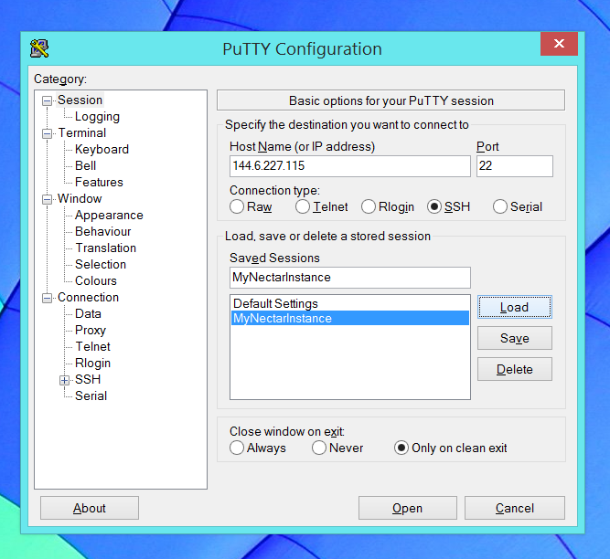 -
Select SSH > Tunnels in the left pane. Enter these values:
Source port: 5900
Destination: localhost:5901
Then, click the Add button. Your tunnel will now appear in the list.
-
You can save the tunneling along with your session by selecting Session in the left pane. Click on your session name in the Saved Sessions pane, then click Save (or create a new name instead by typing in a new name, e.g. called “TunneledNectarSession”).
-
Now you can click Open to start the SSH terminal. The tunnel will now be active as long as the PuTTY terminal window stays open. You can use this SSH terminal as a shell into the instance as well (as we have been doing the whole time), while simultaneously having your remote desktop open.
-
The next time you run PuTTY, you must open these saved settings by selecting the name in the Saved Sessions pane and clicking Load, then clicking Open. Or, you can simply double-click the session name to load and run the saved session.
See also the section about SSH Tunnelling in the Appendix for more information.
Step 2: Install the VNC Client on your computer
We can connect to our desktop using a VNC Client (also often referred to as “VNC Viewer”). You may download any VNC viewer you want.
Here, we’ll suggest the following, depending on which OS your home Computer runs:
Ubuntu
You can use the pre-installed Remmina client.
Alternatively, install vinagre with the command
sudo apt-get install vinagre.
You can use the free RealVNC Viewer. Continue with the instructions below (Mac/Windows/Linux alternative client: RealVNC) if you would like to use RealVNC.
We recommend you use the default Remmina client to start with.
Windows
You can use the free RealVNC Viewer. Continue with the instructions below (Mac/Windows/Linux alternative client: RealVNC) if you would like to use RealVNC.
Alternatively, you can also use UltraVNC or TightVNC ( Note for TightVNC: Choose the “custom” installation mode and then select to only install the client, you may have to unselect the server).
Choose the client you want and install it. We suggest you use RealVNC for this tutorial.
Mac OS X
OS X has a VNC client built in. It’s been installed in every version of OS X since 10.4. It’s called Screen Sharing and it’s located in your CoreServices folder, a difficult to find folder which is part of OS X.
The easiest way to find screen sharing via the “spotlight search”: Type Cmd+Space to bring it up. Type “screen sharing” and the app should be found.
Or you can also find the application in this path:
/System/Library/CoreServices/Screen Sharing.app
or, as of OS X 10.10 Yosemite the containing folder is now located in
/System/Library/CoreServices/Applications
You can access it through the terminal (Applications Folder > Utilities > Terminal.app). In the terminal, type:
open /System/Library/CoreServices
or on OS X greater than 10.10:
open /System/Library/CoreServices/Applications
That will open a Finder window where you will see Screen Sharing and you can open it or create an alias if you want.
You can use the free RealVNC Viewer. Continue with the instructions below (Mac/Windows/Linux alternative client: RealVNC).
Mac/Windows/Linux alternative client: RealVNC
Download the client (the viewer) from the RealVNC website. When downloading, it may ask for your E-Mail, but you can specify some random details, the viewer will still work. When installing, choose to only install the client (the viewer):

When you connect (we will do this in a moment), it asks you whether you accept an insecure connection. Say yes (it will in fact be secure via our tunnel).
RealVNC by default compresses the colours to save bandwidth. To see your screen in full colour, you need to go to Options in the initial window, then disable The checkbox for *Adapt to network speed, and push up the slider to Best quality.
Step 3: Connect to the VNC server
Open your VNC client (“viewer”) of choice. This will generally be a very simple interface with just a few fields to fill. The following instructions are generic for all clients. There are also some more detailed instructions given below for some examples.
-
Choose VNC as a protocol, if the viewer asks for it.
-
As server (or host), specify “localhost”.
-
If a port specification is required, choose 5900. If you cannot find a port specification, you probably have to type “localhost:5900” instead of just “localhost” in the “server” (or “host”) field.
Now connect, and you should get a password prompt, in which you type the password you just chose for the VNC Server (not your ssh passphrase, unless you chose the same!). Then, you should get to the remote desktop.
Do not use any ssh or security options that clients may offer, because we have just done the ssh tunnel separately ourselves. Your connection will be secure. If you have followed the instructions above, your connection is secure, even if the vnc viewer says it is not (The VNC viewer does actually not realise it is running through the ssh tunnel).

Example on the image above: Connecting with TightVNC on a Windows machine. The Putty Terminal is displayed on the left.
Mac Example client: Screen sharing
To connect with the in-built Screen Sharing app, open it (Apple+Space and type “screen sharing and open it up). Into the text field, type *localhost:5900 *and then click “connect”:

You will be prompted for your password. That’s the password you selected when you set up the VNC Server in the previous step.

Now a window should open to the remote desktop.
Example client: RealVNC
Start the RealVNC client (on a Mac, you can find it via the spotlight search: Cmd+Space and then type “realVNC”. It will open a folder in which you find the executable).
To launch a connection, type “localhost:5900” into the text field. Leave the encryption setting on “Let VNC Server choose” and click “connect”.

When it asks you whether you accept an insecure connection, say yes (it will in fact be secure via our ssh tunnel).
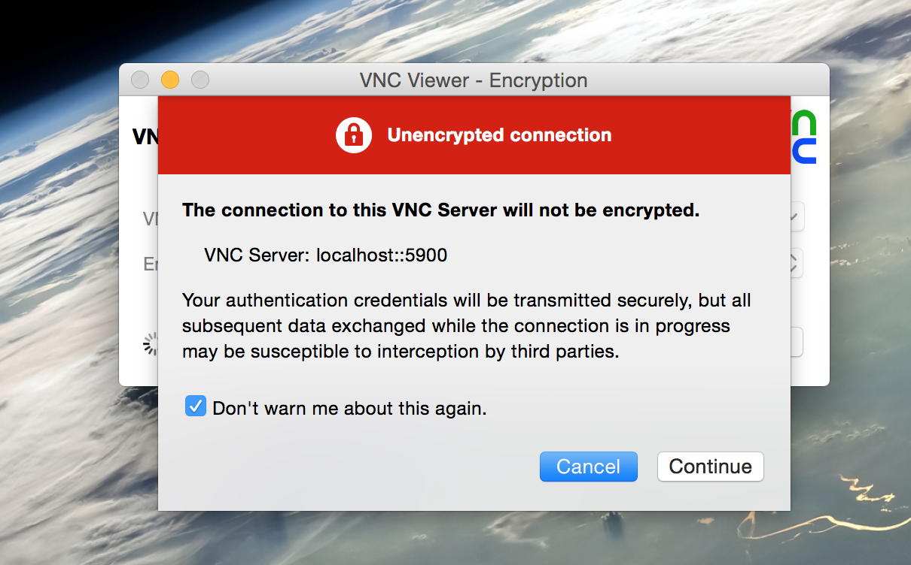
You will now have to type in your password. That’s the password you chose when setting up the VNC server on your instance in the last step.

RealVNC by default compresses the colours to save bandwidth. To see your screen in full colour, you need to go to the realVNC “Options”. You can either do this in the initial login window, or when your remote desktop is open, mouse over the top of the window and select “options”.
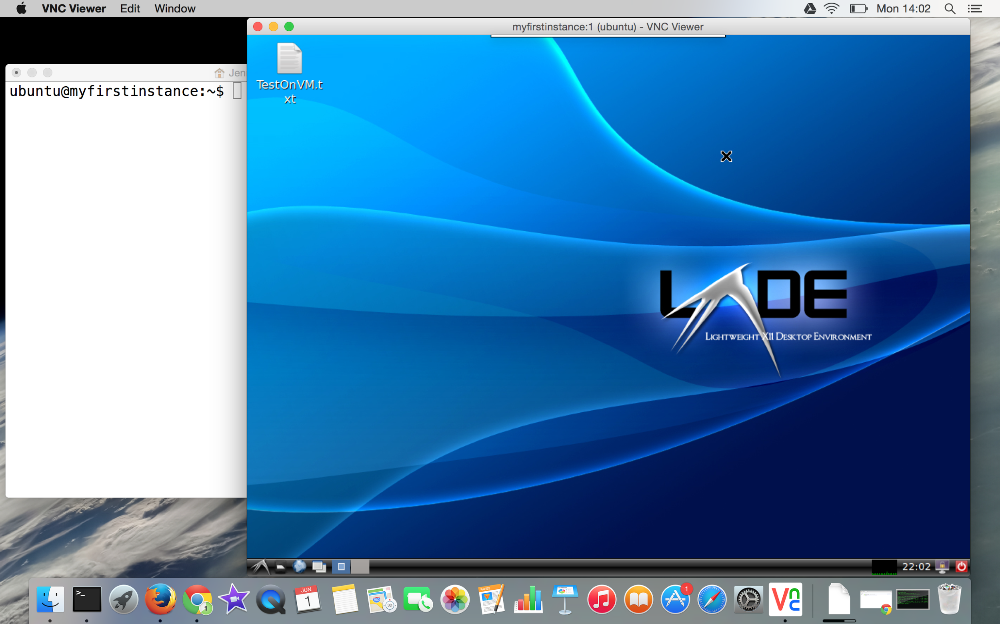
In the options, disable The checkbox for Adapt to network speed, and push up the slider to Best quality (better quality will be slower but mostly you may want it anyway). Also enable the checkbox Scale to window size if you have issues with the window being too large for your desktop.
General troubleshooting
Your colours look a bit off?
Some clients (e.g. RealVNC and Remmina) use fewer colours and higher compression in order to reduce latency of your remote desktop. You have to change this settings in the client - each client is different so you might have to find out where you can change this.
In Remmina, you can create a saved session (by clicking on “new”) instead of using the default Quick Connect. You can change the settings for the colour quality there.
RealVNC by default compresses the colours to save bandwidth. To see your screen in full colour, you need to go to Options in the initial login window, then disable the checkbox Adapt to network speed, and push up the slider to Best quality.
Problems connecting?
Make sure your ssh tunnel is open and you have set the right port numbers. On Windows, your PuTTY session must be open and you must have configured the tunnel as described above.
Automatic start-up of the VNC server
With the current settings, you will have to manually re-start the Vnc server on your instance every time after you reboot the instance. We can automate this to save you this work, and start up the Vnc server automatically.
The easiest way is to add an execution command in a file. Log into your instance (via ssh terminal) and follow these instructions:
-
Verify the location of your VNC program by typing:
which vncserver
Most likely you will see /usr/bin/vncserver as result. We will assume this in the following. If you get something else, you will have to use your own path instead of this one. -
Create a file startVNC.sh (or call it whatever you want) in directory /etc/init.d:
sudo nano /etc/init.d/startVNC.sh - The editor will open. Put the following contents in the file (Note: If your username is other than ubuntu, you have to replace it in the 3rd line):
#!/bin/bash PATH="$PATH:/usr/bin/" export USER="ubuntu" su ${USER} -c "/usr/bin/vncserver -geometry 1024x768 -depth 24"Note: If your vncserver is located somewhere else, as you have found out in step 1, you have to use your own path here instead of /usr/bin/vncserver
-
Close the editor with Ctrl + X (and confirm saving the file with “yes”).
-
Now we have to make this file executable
sudo chmod +x /etc/init.d/startVNC.sh - Add this file to be executed at startup:
sudo update-rc.d startVNC.sh defaults
Optional:
You may also set up a “service” out of the vnc server. After you have set it up, it allows you to start the vnc server any time with the following command:
service startVNC.sh start
(or shut it down with stop instead of start). This is probably the more proper way to do it, but the file startVNC.sh is a bit more complex:
#!/bin/bash
PATH="$PATH:/usr/bin/"
export USER="ubuntu"
DISPLAY="1"
DEPTH="32"
GEOMETRY="1024x768"
OPTIONS="-depth ${DEPTH} -geometry ${GEOMETRY} :${DISPLAY} -localhost"
. /lib/lsb/init-functions
case "$1" in
start)
log_action_begin_msg "Starting vncserver for user '${USER}' on localhost:${DISPLAY}"
su ${USER} -c "/usr/bin/vncserver ${OPTIONS}"
;;
stop)
log_action_begin_msg "Stopping vncserver for user '${USER}' on localhost:${DISPLAY}"
su ${USER} -c "/usr/bin/vncserver -kill :${DISPLAY}"
;;
restart)
$0 stop
$0 start
;;
esac
exit 0Reconnect to the VNC afresh
Of course, you won’t have to do all the above steps every day when you want to connect to your remote VNC desktop. The only things you need to do each time are:
-
Start the ssh tunnel, as described above in step 1. On Windows, if you are using PuTTY, you may have created a saved session which you can start easily.
-
Open your VNC client and connect, as described in step 3 above.
Let’s do this now to see how easy this is. Close all your applications (all your terminals / PuTTY, and your open VNC viewer).
If on Unix/Mac, also kill your ssh tunnel (for instructions, see the notes about SSH tunneling in the Appendix).
Now, do the above steps 1. and 2. above to get back to your remote desktop.
Troubleshooting on Windows/Putty:
If you are Windows and PuTTY, check whether you have properly saved your session last time. When you click on your session and then click “Load”, you can check whether all the settings we have configured earlier (“Connect to the instance”, and “Step 1: Set up ssh tunneling”) are still there. If you do not have all the details saved, change them now and save your session again (click on Session in the navigation panel on the left, select your session in the Sessions pane, and click Save).
Then, try again.
Resources
-
An article on VNC on Linux
-
Article on how to install an configure VNC on Ubuntu 14.04
-
Another article on how to install a VNC server on Ubuntu 14.04
Running several desktop environments
It is possible to have several desktop environments installed and use them interchangeably. You will have to install each desktop environment you want to use on your instance (as we have done in this section earlier.
Note that with VNC, you have to change your desktop environment on the server side (on your instance), and everyone who connects to the instance will automatically use the desktop which has been configured for this instance. To change the desktop environment, you have to edit the xstartup file and restart the vnc server, as described in the last section.
With X2Go, you can decide on the X2Go client which desktop to use — in your x2goclient application, you can choose from the drop-down box which desktop environment you want to run.
Graphical Interfaces on the ssh terminal
If you want to run a single graphical application, you can also do this without setting up a remote desktop. You can do this via the ssh command line and start the application directly.
The advantage is that you don’t need to set up a remote desktop server on your instance and install a client on your local machine.
The downsides are (1) it introduces some security issues, which will not be discussed in detail here, and are usually not a big worry (see security note below for a few details). And (2), this is (perhaps surprisingly) a lot slower than a remote desktop solution. This is because of the way the communication is encoded.
Note: This technique allows no desktop sharing, just remote application running (However you could use XNest, not discussed further at this point).
The security issue arising with running graphical applications via the ssh connection is that we have to enable X11 Forwarding. X11 is the base for the Linux graphical applications (e.g. opening windows). With X11 forwarding, the server is likely to gain shell access to the client (the ssh terminal you are running on your computer): the server can send X11 commands back to the client. X11 was not designed with security in mind, it was designed with the idea that all programs that you’re displaying are run by you and therefore trusted anyway. However ssh also has a SECURITY extension which disables some obvious attacks such as keyboard grabs and key injection. However it still allows other security issues like focus stealing.
In simple terms: Let’s say you open a SSH connection to <some-server>, with X11 forwarding enabled. The primary risk is that if <some-server> is malicious, then <some-server> can do all sorts of things to the windows/applications you have open on your own computer.
For instance, <some-server> can open up windows on your computer, can close other windows you have open, can spy on the contents of other windows you have open and on the keys you type into other windows. It can inject spoofed keystrokes and mouse events into other windows you have open, and generally just mess with every other window you have open on my machine — even if some of those other windows are local applications running locally.
In general, because you log on to your own remote machine and not just <some-server>, this security risk is not much of a worry — only if your instance was infected by malicious software, this would be a potential security lead.
Step 1. Check that your Instance allows X11 Forwarding
We have to enable X11 forwarding. It may already be enabled, but make sure it is. Go to your ssh terminal and type:
sudo nano /etc/ssh/sshd_config
to edit the configuration file.
Scroll down until you find the line
X11Forwarding yes
(it may be a no instead of the yes). If this line starts with a #, remove the #. Make sure it is set to yes. If you cannot find the line, add it at the end of the file, just as it is shown above.
Scroll further to find the following line:
X11DisplayOffset 10
and make sure it is set to 10.
Exit the editor with Ctrl+X (and confirm saving the file with ‘Y’).
If you did not have to change the file, you can jump to the next step.
Otherwise, you now have to restart ssh on your instance. You can do by typing:
sudo /etc/init.d/ssh restart
Step 2. Log in to your instance via ssh
Linux
Open up a terminal. We will connect to the instance with the ssh command that we used in an earlier section, but this time you have to add the -X option to the command, to enable graphics mode.
ssh -i <your-private-key-file> -X ubuntu@NNN.NNN.NNN.NNN
Mac
You first need to install XQuartz on your Mac. If you don’t have it already, download from the XQuartz website
Note: If you have previously followed the steps to install the X2Go Client, you will already have XQuartz installed!
After you installed XQuartz, open up a Terminal on your local computer. We will connect to the instance with the ssh command we used in an earlier section, but this time you have to add the -X option to the command, to enable graphics mode.
ssh -i <your-private-key-file> -X ubuntu@NNN.NNN.NNN.NNN
Windows
If you use Windows you will need to install a X11 server locally on your windows computer. You can use for example Xming.
Open your PuTTY session and load your settings that you previously saved (to do this, select Session in the navigation pane on the left, select your saved session from the list, and click Load).
Then, go to “Connection > SSH > X11” in the navigation pane. You need to check Enable X11 forwarding and specify the X display location. If you did not change anything in the default configuration of Xming, then set the display location to “localhost:0”.
Otherwise, if you change the Xming configuration using the tool Programs > Xming > XLaunch, make sure to set the parameters for the display accordingly.

Step 3. Install X Windowing system on your instance
Your instance still needs a concept of graphical interfaces, so we need to install it.
If you already have previously installed a desktop environment (e.g. LXDE, Gnome, KDE, XFCE) as we have done in an earlier section, then you can skip this step, because the windowing system is already installed.
To install the very basic windowing system, go to your ssh session into your instance and type:
sudo apt-get install xauth
sudo apt-get install x11-apps
It is likely the xauth package (first command) already installed, but we are doing this just in case. If it is installed, the first command will not re-install any packages.
Step 4. Run a graphical application
We will now test if this works. Go to your ssh terminal (or on Windows, the PuTTY terminal) and type:
xcalc &
This should open up a simple calculator application that is installed by default. You may have to wait quite a while until it opens up, as said earlier, this way to run graphical applications pretty slow.
Note: The & after the command causes the calculator to open up and detach from the terminal. If you skip it, the calculator will open, but you won’t be able to type other commands in the terminal.
If this worked, try a larger application, like firefox. Go to your ssh terminal (or PuTTY on Windows) and type:
sudo apt-get install firefox
(It may already be installed)
Then, type
firefox &
and wait a while until firefox opens. You may notice the amount of time you have to wait is much longer than when you have a remote desktop open (as an earlier section described). To start with, ignore some warnings and error messages that may come up — it really takes forever for firefox to come up.
Troubleshooting on Unix/Mac
If you receive errors trying to run graphical applications, try the option -Y (instead of -X) in your ssh command (in Step 2 above).
Install a web server
In this section we are going to enable a web server and create our first simple web site.
To install the web server, go to the ssh terminal and type:
sudo apt-get install apache2
Confirm installation of the package with ‘Y’.
Now, open the web browser on your local computer, and type your instance’s IP address in the URL field. We will see the default apache website of the browser.
Let’s now start our own simple website. In your ssh terminal, type:
nano /var/www/html/index.html
the directory /var/www/html is where your website lives by default, and the file index.html is the start page which we want to edit. In the editor that comes up, remove all the text inside and replace it with the text below.
Tip: Copy and paste will not work with many terminals. If the traditional copy & paste does not work, you can instead try the following: copy the text as usual; then click with your mouse on the place you want to insert the text in your ssh terminal editor; Then, click the right or middle mouse button — this will work on many systems to “paste” the contents of your clipboard.
<!DOCTYPE html PUBLIC "-//IETF//DTD HTML 2.0//EN">
<HTML>
<HEAD>
<TITLE>
A Small Hello
</TITLE>
</HEAD>
<BODY>
<H1>Hi</H1>
<P>This is very minimal "hello world" HTML document.</P>
</BODY>
</HTML>Now, go to your browser again and refresh the page. You should now see a very crude website displaying
Hi, this is a very minimal “hello world” HTML document.
Managing storage
Prerequisite: You should know what types of storage are available on the NeCTAR cloud. This was discussed in Module 6. You should also be familiar with connecting to your instance via an ssh terminal, as described in an earlier section.
In this section, we will go through the steps to set up various types of storage on our instance.
A brief recap of the available storage types:
-
Object storage: These are single files which you can upload on the server and which you can access from anywhere via a simple web interface or a suitable client application (of which this section will introduce a few).
-
Volume Storage (also called Block Storage) and Ephemeral Storage (also called On-Instance storage) are directly attached to your instance.
-
Ephemeral storage is tightly attached to your instance and is deleted when you terminate (delete) your instance. You cannot recover the data after you terminate the instance, unless you have backed it up.
-
Volume Storage can be attached and detached from your instance(s). After you terminate the instance, the data is not lost. You can attach it to a new instance after you launch it.
-
Requesting storage
The NeCTAR trial account only includes object storage and ephemeral storage. You will have to file an allocation request to get access to Volume storage.
The allocation process was described in Module 5, and more information can also be found on the NeCTAR support website.
If you don’t have an allocation yet, you can complete the next section, On-Instance storage, and section Object storage. You will have to wait for your allocation until you can follow instructions for Volume Storage. However you can still read through the Volume storage instructions to see that it is easy, and in parts very similar to handling the secondary disk with the On-Instance storage.
On-instance storage
On-Instance storage appears as two separate hard disks. For example, in the flavor “m1.small” (you selected the flavor when launching the instance), this is
-
a primary disk (10GB) which is saved with snapshots you make of the instance (see Module 9 for details about snapshots), and
-
a secondary disk (30GB) which appears as a second hard disk on your instance, and is not backed up with snapshots. You will have to back up your data separately, which is a topic we will discuss later in Module 9.
The primary disk (1) is usually used for the operating system, you should not use it primarily to store data. Your “home directory” is also located within this disk space (when you log on with ssh, you start off in your “home directory” /home/ubuntu/). To store large and important files, you should use the secondary disk (2). The advantage of this disk, as opposed to the volume storage, is that you don’t have to create it separately: it already comes with your instance. Depending on the flavor you choose, you can get up to 480GB of storage for the secondary disk.
To get access to the secondary disk, we will have to “mount” it first. Mounting is a technique which essentially makes your hard drive accessible to you at a certain location (in a folder). Usually, the secondary disk is available on your system path /dev/vdb. However this is a device file, so you cannot read files there as if it was a folder. For this, we have to “mount” /dev/vdb to a folder first.
On some images, e.g. on the Ubuntu image we use, the device /dev/vdb will already have been mounted for you, most likely in the folder /mnt. However we will still go through the steps of how to mount a device to another folder (name it for example /data), in order to learn all steps involved in preparing storage. You will benefit from this knowledge when setting up the Volume storage.
To see where your secondary disk is mounted (or if it is mounted), go to your ssh terminal and type:
mount | grep vdb
You may get output that looks similar to this:
ubuntu@myfirstinstance:~$ mount | grep vdb /dev/vdb on /mnt type ext3 (rw)
This means that vdb is mounted on mnt and has the ext3 file system with read (r) and write (w) permissions. If you don’t get an output at all, vdb is not mounted.
Alternatively, try this command to check the mount point and size of your disks:
sudo lsblk -l
This should give you an output similar to this:
ubuntu@myfirstinstance:~$ sudo lsblk -l NAME MAJ:MIN RM SIZE RO TYPE MOUNTPOINT vda 253:0 0 10G 0 disk vda1 253:1 0 10G 0 part / vdb 253:16 0 30G 0 disk /mnt
This tells us that we have two hard drives, vda and vdb, of sizes 10G and 30G respectively. The primary disk (vda) is further partitioned into a sub-disk called vda1 (using the full 10G) and this is mounted under the mountpoint “/”. In Linux terms, this means this disk is used for the operating system. The secondary disk (vdb) has 30G and is mounted on /mnt. Many OS, for example Ubuntu, already have mounted the secondary disk, but it may also not be mounted yet, in which case nothing is specified under MOUNTPOINT.
If your disk vdb has already been mounted, take note of what is specified as mount point for it. Then, unmount the disk using the command:
sudo umount <mount point>
replacing <mount point> with your mount point. For example, if your disk was mounted on /mnt, do
sudo umount /mnt
You may also be interested in the file system type which your secondary drive is currently using.
A file system is used to control how how the storage of data (files, folders, etc.) is organized on a computer disk (hard disk, floppy disk, CDROM, etc.).
The large amounts of data on a hard drive needs to be organized, similar to a library of books which needs to be catalogued, otherwise books cannot be found efficiently. Libraries have developed standards to organise their books, and similarly, computer systems have. Windows uses the vFat or the NTFS systems, while Linux has others, e.g. ext3 and ext4 are current standards.
File systems have different properties, e.g. maximum file size or partition size that is supported, and whether they journal or not. A journaling file system is more reliable when it comes to data storage: it prevents inconsistency, and is much faster at file system checks than non-journaled file systems.
For more information about the different Linux file systems, refer to this Ubuntu help page.
To find out which file system type your drives use, type:
sudo lsblk -f
which will print a different view of the information we have seen in the last command (because we use the -f option instead of -l). It should look similar to this:
ubuntu@myfirstinstance:~$ sudo lsblk -f NAME FSTYPE LABEL UUID MOUNTPOINT vda └─vda1 ext4 1b85cad6-... / vdb ext3 ephemeral0 24cf7b45-77...
From this, we can see that vda1 is a partition of vda. We can also see that vda1 uses the file system type ext4, while vdb is formatted with ext3.
In the above example, the disk devices are available on the paths /dev/vda and /dev/vdb (you have to put the /dev/ before the disk name to get the path).
Follow these instructions below to set up your secondary hard disk. You should do this every time you start up a new instance and want to prepare the secondary disk for usage.
Step 1. Formatting
The first time you start up an instance, you may want to format the hard drive of your secondary disk to make sure you have the right file system type and start from a clean state.
Formatting erases all data that may already be on the hard disk. If you are working with a new instance, nothing of importance will be on it, e.g. only a default system Lost+Found folder, or something similar. You should only be careful with this step if you have used the disk before and have data on it. Then, you should back up this data or skip this step (if you skip this step, you will have to keep the file system which is already used on the disk).
One way to format the drive with the ext4 file system type is:
sudo mkfs.ext4 /dev/vdb
(if your secondary drive is at another path than /dev/vdb, which you have just found out before, you have to replace this here).
Confirm the formatting with ‘y’. You should see the status message
Writing superblocks and filesystem accounting information:
Wait a while until it says “done.”, and then your hard-drive is formatted.
Now, you may want to verify that you have formatted the drive with the ext4 file system. Again, use the command
sudo lsblk -f
which prints information similar to this:
ubuntu@myfirstinstance:~$ sudo lsblk -f NAME FSTYPE LABEL UUID MOUNTPOINT vda └─vda1 ext4 1b85cad6-... / vdb ext4 24cf7b45-77...
You should now see that vdb is formatted with ext4. Only vda is mounted on ”/”, and this should stay this way, because the OS is saved under ”/”.
We will mount the secondary drive in the next step.
Step 2. Mounting
You can now mount your hard drive, so you can access it. First, create a folder which will be used to access your data. For example, we can name it /data:
sudo mkdir /data
Then, mount it:
sudo mount /dev/vdb /data
This will mount the disk if the type of file system can be guessed.
Otherwise you may have to specify the file system type with the -t option, e.g.
sudo mount /dev/vdb /data -t ext4.
If you did not create and format the Volume then you can look up the filesystem type:
sudo parted -l
This maps the device dev/vdb to the folder /data. Now, your disk is mounted at /data, and you can add, remove and access files on your secondary disk at the path /data.
You can list the contents of this directory to see what is on your disk (alternatively, if you are using a remote desktop, you can open it in your file explorer. It should be displayed as a disk symbol in the left navigation panel of your file browser).
ls /data
You may see that there is a Lost+Found folder (this is a default system folder). If nothing is printed, you have no files there yet.
Step 3. Write permissions
By default, you do not have write permissions on the secondary drive. You can try to copy a file onto /data, but you will get an error message about write permissions (Note: This is not due to our folder not being located in our home directory). So we need to add our write permissions now.
First, find out which user group you belong to is. Type
id ubuntu
and find what is written behind “gid=”. This may be gid=1000(ubuntu). So your group name is also ubuntu and has the ID 1000.
Now, there are two options: You can 1) enable write permission only for yourself (your username ubuntu), or 2) for the user group you are in. This way, you can share the drive with other users that you may give access to your instance and who you put in the same user group. The instructions below detail what you need to do for both alternatives.
Option 1)
sudo chown ubuntu /data
Option 2)
sudo chgrp ubuntu /data
sudo chmod g+rwx /data
This should do it. You can now write and execute files from your secondary drive.
You will only need to do this once for the secondary drive on this instance.
Step 4. Auto-mounting
Every time you reboot your machine, you have to mount (not format!) the secondary drive again (so only do Step 2 above, not Step 1). We can avoid this by auto mounting it. For this, we have to edit a file called fstab:
sudo nano /etc/fstab
Look for a line which starts with /dev/vdb. You may find one that looks like this:
/dev/vdb /mnt auto defaults,nobootwait,comment=cloudconfig 0 2
If you find such a line, this means your secondary hard disk is already automatically mounted at system start. On the Ubuntu distribution we are using in this course, this is the case: it is auto-mounted to the folder /mnt, as we can see in this line. If you find this line, you can edit it and just change the /mnt *to */data. If you cannot find this line, just add this line to the file at the bottom:
/dev/vdb /data auto defaults,nobootwait 0 2
Exit the nano file editor with Ctrl+X and confirm saving of the file with ‘Y’. Next time you reboot your instance, you should already find your secondary drive in your folder /data, and you won’t need to do any of the Steps described here to access it.
Object storage
You can connect to your object store with a variety of clients, as long as they support OpenStack Swift or Amazon S3. We will discuss some example clients which support Swift in this section.
Security Warning
Swift does NOT provide encryption of the data it stores.
If you have sensitive data that requires encryption you must encrypt the data files before upload them to your object store.
Access to your object store requires your password, but this password may be saved in a file that people who have access to your local computer can read. You must be careful to not give anyone access to your computer — similarly, they would get access to your private ssh key that you save on your computer to log in to your instance, so be careful with giving people access to your computer.
The NeCTAR implementation of Swift is geodistributed across Nodes of the Research Cloud so that availability is not reliant on any one datacentre or network infrastructure. Each collection of Swift nodes/hardware is known as a region, which may or may not include a Swift proxy server (the Internet facing and serving component of Swift). With some Swift clients/APIs users can explicitly choose which proxy to connect to, this might be useful e.g. for speeding up writes to object storage by choosing the nearest proxy. Due to NeCTARs Swift having multiple regions, some clients/APIs require explicit configuration of a default region, which should be “Melbourne” for most users (see e.g. the Cyberduck profile below).
Get your OpenStack credentials
Before you start, you should get your login details. Note that you will not need to do this if you just want to upload files via the Dashboard (as described in the next section). But if you want to use other tools, and to complete this tutorial, you should take note of your credentials now.
You can download your credentials from the Dashboard
-
Your tenant ID is the name of your project as reported in the left hand panel of the dashboard (e.g. pt-12345)
-
Your username is reported at the top of the dashboard on the right (e.g, logged in as: user@uni.edu.au)
-
Open the Dashboard API tab: get there via Compute > Access & Security > API Access.
-
Look up what is specified for the ‘Identity’ Service in the Dashboard API tab. It will be a URL like
https://keystone.rc.nectar.org.au:5000/v2.0/
Take note of the text between https:// and the colon (keystone.rc.nectar.org.au in the example). This will be the Server. Take note of the number (5000 in the example). This will be the Port. You will need the Keystone Server and Port to authenticate your access. Also take note of the keystone version which you are using, in this case its v2.0. -
Get your credential file (this is called the OpenStack RC file for OpenStack, and EC2 file for Amazon). You can download by clicking on the buttons on the top right on the same window: Download OpenStack RC File. Download it and save it somewhere on your computer where you can easily find it later.
-
You will also need your OpenStack password. This is not the same password that you use to log in to the Dashboard! If you have never used the OpenStack password before, you need to generate it first. You can do this in the Settings of the Dashboard: click next to your user name (your e-mail) on the top right and a drop down menu will open. Click on Settings. You need to reset your password by clicking Reset Password on the left panel of the settings. A long combination of numbers and letters will be displayed. This is your OpenStack password. Copy the text and save it somewhere safe.
Your OpenStack password will be a long combination of numbers. At the time of writing, unfortunately this password cannot be changed yet, but this should be changed in a future update of OpenStack on NeCTAR.
You will not need your OpenStack RC file in this Module, but you will need it later in Module 10. So while you are on the Dashboard API page already, you may download it now, and remember for later where you put it.
All platforms: Access via the Dashboard
We will upload some files to our Object Store using the Dashboard. This is probably the easiest method to upload files.
First, select any file on your computer — some image, text file, or anything not so important. If you are unsure which to choose, just create a new text file, write something in it, and save it to the Desktop (or anywhere else where you can find it.
In this example, we are using a file called SampleObject.txt with the text “I am a sample object file” in it, saved on the Desktop.
Step 1: Create a container
Go to the Dashboard and then to Object Store > Containers. You will get to a page which shows the overview of your containers.

First of all, you will have to create a Container.
A Container is like a folder in which you can put files. The difference to a normal folder is that a Container is intended for a flat hierarchy, so you cannot create containers within a container — however you may create “Pseudo Containers” within the Container, so you can still organize your files hierarchically.
Click on Create Container. As a Name, type in MyObjectContainer (or you may use your own container name, in which case you have to consider this in the instructions below). Keep the access on private.

Click on Create Container. Your Container MyObjectContainer will then be listed on your Dashboard:

Step 2: Upload a file
Click on Upload Object on the right side of your container overview. A window will open in which you can Browse for your file.
Note: If you cannot see the “Upload Object” field, you have to click on your container MyObjectContainer to select it.

You may also rename it in the given text field if you wish, for now we are going to keep the name SampleObject.txt.
Click Upload Object to close the window and upload the file to your object store. It will now be displayed on the right side of the overview. We can see that it has 27 Bytes.
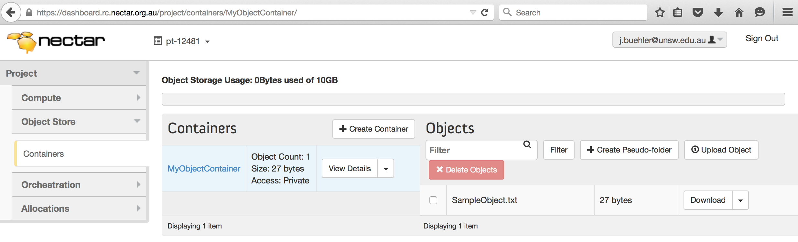
If you wanted to download this file (e.g. when accessing the store from another computer), you can do this here by clicking on Download.
Windows/Mac: Access with Cyberduck
-
Download the newest version possible of the application Cyberduck (you need at least version 4.4): http://cyberduck.ch/
- Install Cyberduck.
- On a Mac, you will download a .zip file which contains the app. Save it to the Desktop (or any other folder). Extract the zip file by double-clicking on it.
- On Windows, you will download an installer. You may keep the default options, if unsure. You don’t need to install Bonjour, if you are asked.
- Create a text file on your local computer (e.g. save it on the Desktop) with the following contents. Name it NeCTARObjectStore.cyberduckprofile (or any other name, it just has to end with .cyberduckprofile).
<?xml version="1.0" encoding="UTF-8"?> <!DOCTYPE plist PUBLIC "-//Apple//DTD PLIST 1.0//EN" "http://www.apple.com/DTDs/PropertyList-1.0.dtd"> <plist version="1.0"> <dict> <key>Protocol</key> <string>swift</string> <key>Vendor</key> <string>NeCTAR Swift (Keystone)</string> <key>Context</key> <string>/v2.0/tokens</string> <key>Region</key> <string>Melbourne</string> <key>Description</key> <string>NeCTAR Swift Melbourne (Keystone)</string> <key>Scheme</key> <string>https</string> <key>Default Hostname</key> <string>keystone.rc.nectar.org.au</string> <key>Default Port</key> <string>5000</string> <key>Hostname Configurable</key> <true/> <key>Port Configurable</key> <true/> <key>Username Placeholder</key> <string>tenantId:username</string> <key>Password Placeholder</key> <string>password</string> </dict> </plist> -
Double-click on your file NeCTARObjectStore.cyberduckprofile.
-
A Dialogue should open where you can specify Server etc. If it does not, open Cyberduck and go to Bookmarks > New Bookmark.

-
Choose NeCTAR Swift Melbourne (Keystone) from the drop-down box, if it is not selected yet. If it does not exist, something has gone wrong in importing the NeCTAR profile (your file NeCTARObjectSTore.cyberduckprofile). The image shows how it looks on a Mac, on Windows your interface will look a bit different, but the fields are the same.
-
Nickname: give the connection a name of your choice, e.g. ‘NeCTAR Object Store’
-
Confirm that Server and Port match the OpenStack credentials you took note of. If they don’t match use the values you took note of.
-
TenantID:Access ID (or username on a Mac): Type in your tenant ID and username (you took note of this before) separated by a colon, for example pt-12345:user@uni.edu.au.
-
Expand the window 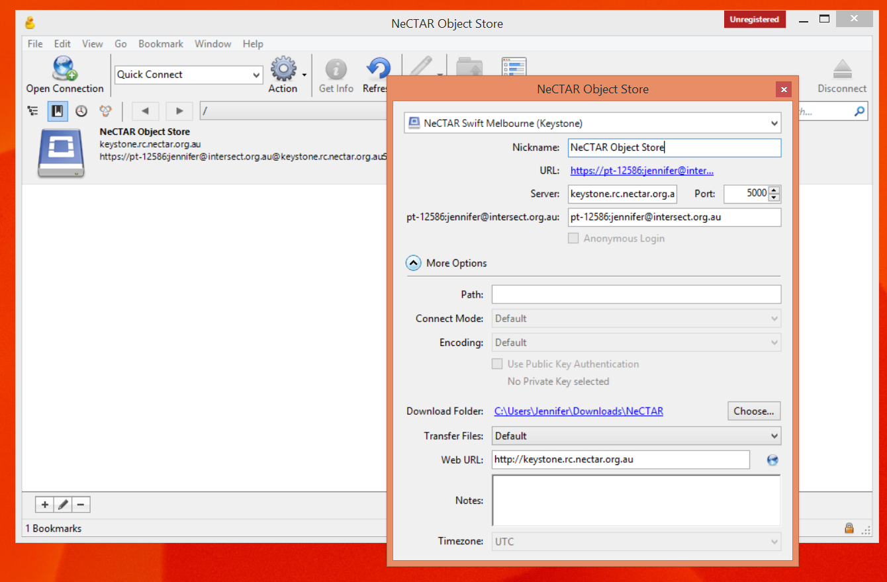 by clicking on More Options. You can choose a Download Folder to which your files will be downloaded by default. As Path you can (but do not have to) specify the version number of keystone, e.g. /v2.0/.
-
Leave all other options in the default setting, and close the window (by clicking on the window cross)
-
Double click on the symbol of your connection and Cyberduck will try to connect to your object store.
You will be asked to type your OpenStack password (not the password you use to login to the Dashboard!) This is the password in the OpenStack credentials you took note of. You might also be required to re-enter your tenant ID and username, again separated by a colon
-
You can now drag and drop files into your object store container (drag in on the folder symbol), and from the object store container to your local computer (onto your desktop or into an open folder in your file explorer). You can also right-click and Download (it will download into the folder you selected as Download Folder in the connection dialogue).
- You can synchronize files to a folder on your local computer. Right-click on the container you want to synchronize, and select Synchronize. You will be prompted to select a folder to synchronize into.
Attention! Do not select the same folder which you have specified as Download Folder in the connection dialogue! This will create duplicate and nested directories.
Select your folder, and it will start to synchronize your files. You can then access your object store files in this folder, edit them from there, synchronize with Cyberduck again (you have to select the same folder again), and your Object Store will be up-to-date!
- You can edit files directly by right-clicking on them and select “Edit”. Then you may choose a program to edit it with.
Resources
Windows only: Access with Cloudberry
-
If you do not already have CloudBerry Explorer then download and install it on your computer from the official website.
-
Open CloudBerry Explorer
-
Click File > OpenStack > New Account. Then, click Add.
-
Display name: use a meaningful name to this account (e.g., the name you supplied as your container in the step above)
-
User name: your username, which is your e-mail (e.g., user@uni.edu.au)
-
API key: your OpenStack password
-
Authentication Service: This is the server, port and version of keystone that you took note of with your credentials, e.g. https://keystone.rc.nectar.org.au:5000/v2.0
-
Tick Use Keystone authentication
-
Select the Tenant name option from the drop-down menu and insert your tenant ID (e.g., pt-12345)
-
Close the Window with ‘OK’, and close the next Window with “Close”.
-
On the right window, select your display name from the drop down box. CloudBerry will connect to your object store. On the left window, you see your files of your local computer.

-
You can drag and drop files between both windows.
-
You can directly edit a file by Right click > Open.
Linux and Mac OS X: Using any FTP client
Prerequisite: You should know how to use an FTP client.
You can use any FTP client, for example Filezilla. For this, we will have to run a program that acts like a FTP server on our own local machine. This FTP server will then communicate with the SWIFT object storage on our cloud and provide the file exchange via the FTP service.
The following instructions are for a Debian based distribution, e.g. Ubuntu. For more information, refer to the official project page.
Open a Terminal on your local computer to type in the following commands.
- Install the ftp server package
Linux
sudo apt-get install ftp-cloudfs
or use your other package manager if you are on another distribution than ubuntu.
Mac OS X- Install python’s pip (unless you already have it) using the homebrew package manager:
brew install python
Alternative: If you don’t have homebrew, you may use the easy_install command, however there may be problems with running the ftp-cloudfs command with this. You may try anyway, and if it does not work, then uninstall pip again (sudo pip uninstall python-swiftclient) and get homebrew instead.
sudo easy_install pip - Upgrade setuptools
sudo pip install --upgrade setuptools - Install python-swiftclient
sudo pip install python-swiftclient
sudo pip install python-keystoneclient - Install ftp-cloudfs
pip install ftp-cloudfs
- Install python’s pip (unless you already have it) using the homebrew package manager:
-
Start the local FTP server
ftpcloudfs --foreground --keystone-auth --auth-url https://keystone.rc.nectar.org.au:5000/v2.0 --keystone-tenant-separator=: & - Start your favourite FTP client, for example FileZilla. If you don’t have FileZilla, you can install it with
sudo apt-get install filezilla
Your login details for the FTP client are as follows:- Server (or Host): 127.0.0.1
This IP address is the one of your local computer (not an IP address you can use to access your computer from outside though) — Remember, you are connecting to the FTP server we just launched on our local machine. - User: <tenant>:<username>
Replace <tenant> and <username> with your OpenStack credentials. - Password: Your OpenStack password
- Port: 2021
- Server (or Host): 127.0.0.1
- You can now browse your files and drag and drop them between both windows, as you are used to when using the FTP client. On the left side, you can see the file system of your local computer, and on the right side, you can see your object store.

You will have to do steps 2 and 3 every time you restart your local computer.
Linux [Advanced]: Access with CloudFuse
CloudFuse is a lightweight open source application that may be installed on Linux servers to create a local mount point to a customers existing Cloud Files container.
You can find more information and documentation about cloudfuse on the cloudfuse github page
To set up cloudfuse for access to your object store, launch a terminal on your local computer and follow the steps below.
-
Install necessary packages
sudo apt-get install build-essential libcurl4-openssl-dev libxml2-dev libssl-dev libfuse-dev git -
Clone the CloudFuse source
cd
git clone git://github.com/redbo/cloudfuse -
Compile the source code and install it
cd cloudfuse
./configure
make
sudo make install
modprobe fuse -
Create a file called $HOME/.cloudfuse
sudo nano $HOME/.cloudfuse - Put the following contents into your file (replace <your-tenant-name>, <your-username> and <your-password> with your own credentials):
authurl=https://keystone.rc.nectar.org.au:5000/v2.0/ tenant=
username= api_key= cache_timeout=60 -
Set the right permissions:
chmod 600 $HOME/.cloudfuse -
Mount your Swift storage with the following commands
sudo mkdir /mnt/cloudfiles/
cloudfuse /mnt/cloudfiles/
Of course you may choose another name instead of cloudfiles, and/or create the directory somewhere else. -
You should now be able to access your files on the directory /mnt/cloudfiles just as if they were on your local computer.

ls -l /mnt/cloudfiles/
Or open your file explorer to find your mounted drive there (see image to the right). You may even drag and drop files to and from your object storage, as if it was a regular hard drive or folder on your computer. - Every time you restart your computer, you will have to re-connect the object store with the command:
cloudfuse /mnt/cloudfiles/
Troubleshooting:
Your username (of your local computer) may need to be part of the fuse user group. This can be accomplished with the following command in your computer’s terminal:
sudo usermod -a -G fuse <username>
All platforms: Access with the openstack command
You may also use the openstack command to list the files in our object storage that we just created. This will be discussed in Module 10.
Access via APIs
We will discuss more options on how to connect to the object store in Module 10.
Volume storage
This section is going to go through the steps required to use Volume storage from your instance. You are going to
- Create a Volume storage
- Attach the Volume to the instance
- Prepare the Volume for use within your instance
You need to submit an allocation request in order to be able to use volumes. The trial account does not include quota for volumes.
You can only use volume storage from instances running in the same Availability Zone which you have also chosen with your allocation. Therefore, you need to select the same Availability Zone when launching your instance. If you haven’t done so when launching the instance, you’ll have to launch a new one, as described in this earlier section, and select your allocation zone in the Availability zone tab.
There are two options how to manage volumes: (1) on the Dashboard or (2) via command line.
In this module, we will only cover managing volumes via the Dashboard. Module 10 will show how we can manage volumes with commands.
Step 1: Creating the volume.
Before you can use a volume, you have to create it.
Go to Compute > Volumes and click on the + Create Volume button on the top right.

A window opens in which you can give your Volume a name, and add a description.
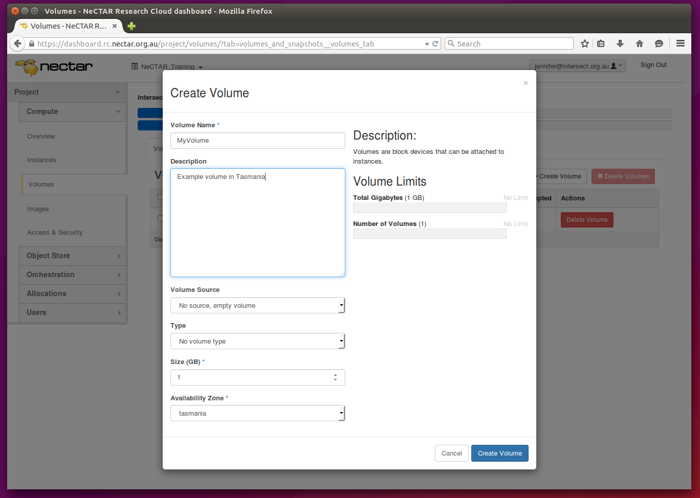
There are also other options which you can specify:
Volume Source: You can either choose to create an empty volume, or create a volume from an image. The latter is useful if you want to create a volume which already has specific data on it. It is possible to save (or back up) a volume by creating an image of it - we will see how to do this in Module 9.
You may want to restore a volume that you previously have saved as an image, or someone else may have sent you an image with data on it which you should have access to. When you create a volume from an image, your volume will have all the data on it that was on the volume when the image was created of it.
In this tutorial, we will create an empty volume.
Type: This field isn’t currently used, it’s there for future expansion. Leave this at “No volume type”.
Size(GB): Type in the desired size (in GB) of your volume.
Availability zone: Select your availability zone. It must be the same in which your instance is running. Creation of the volume will only work if you have a volume allocation at this availability zone.
Click “Create volume” and you will see your new volume in the list of volumes. The Status should switch to “Available” after it has been created. This can take a few minutes.
Step 2: Attaching / Detaching volumes.
Before you can access the volume, you have to attach it to an instance. On the Dashboard, go to “Compute → Volumes” in the left navigation pane if you are not already on the page which shows the list of your volumes. On the right side next to your volume there is a drop-down box.
Select Edit attachments.
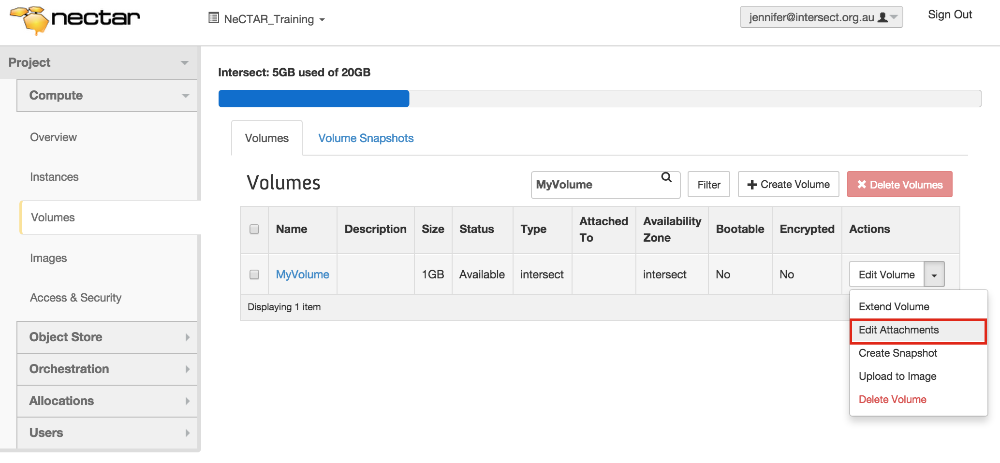
A window will open in which you can select your instance. If you don’t see any instance, you have no instance running in the same Availability Zone. In this case, create one as described in this earlier section.
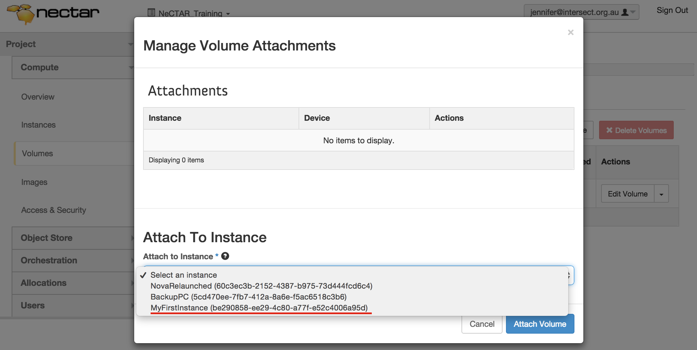
Select your instance and click Attach Volume. The status of your instance will switch to “Attaching”, and when it has been attached successfully, it should display “In-Use”. You should also see the Server and Device that the volume is attached to. In the example below, it is attached to MyFirstInstance and to the device /dev/vdc.

In order to detach the volume again, you would go to the drop-down next to your volume again and select Edit attachments. A window opens in which you may detach the volume again. Your data won’t be lost, it will only be detached from the particular instance. You can re-attach it later again to any instance.

Step 3: Preparing your volume for use.
After you have created your Volume and attached it to your instance you will have to take a few extra steps to prepare that volume for use: you will have to (1) format it and (2) mount it.
The section about On-Instance Storage has more information about formatting and mounting drives.
Log in to your instance via ssh (or use a terminal on your remote desktop) to type in the following commands.
Step 3.1. Look up where your volume has been created
On your Dashboard, go to Compute > Volumes and you should see your volume. In the column Attached to it should display something like
“Attached to <YourInstanceName> on /dev/vdc”
It may also be attached to /dev/vdb, /dev/vdd or something else. Take note of the device name that it has been attached to and use this instead of /dev/vdc in the following.
Step 3.2: Format the volume.
Formatting erases all data. All your data on this volume will be lost. You should do this only the first time you use the volume, or if you are sure that you want to erase all data. If you don’t want to erase the data, skip to the next step.
A new Volume may not have a file system (depending on how it was created) and you need to create one before mounting.
The exact command syntax is depends on the instance’s operating system and the type of filesystem you require. In this example we will create an ext4 file system (a popular file system on linux) for an Ubuntu 14.10 instance.
To format the drive, type:
sudo mkfs.ext4 /dev/vdc
Display information about your disks with
sudo lsblk -f
or
sudo parted -l
This should now show that /dev/vdc has the ext4 file system.
Step 3.3: Mount the volume.
Mounting a disk has already been discussed in detail for the secondary drive of the Ephemeral storage, so at this point, only a summary is provided:
To mount your volume, you will have to create a folder first to which the device will be mounted, e.g.:
mkdir ~/MyVolumeStore
Then, mount this folder:
sudo mount /dev/vdc ~/MyVolumeStore
This will mount the disk if the type of file system can be guessed.
Otherwise you may have to specify the file system type with the -t option, e.g.
sudo mount /dev/vdc ~/MyVolumeStore -t ext4.
If you did not create and format the Volume then you can look up the filesystem type:
sudo parted -l
You can now access your volume on ~/MyVolumeStore (MyVolumeStore in your home directory). You may not have write permission on the Volume yet, you can allow write access for the user ubuntu with:
sudo chown ubuntu ~/MyVolumeStore
Alternatively, you may grant write access to the <user group> (replace <user group> with the name of the user group, e.g. ubuntu):
sudo chgrp <user group> ~/MyVolumeStore
sudo chmod g+rwx ~/MyVolumeStore
Copying files across
You may want to easily access files on your ephemeral or volume storage from your local office computer. We will discuss two ways to do this:
-
Using a SFTP client
-
On the command line, using a secure copy command
Option 1: Using a SFTP client
You may use any FTP client which also supports the secure SFTP protocol, which uses ssh to secure the connection. There are many clients you may use. In this tutorial, we are going to describe the setup for the popular FileZilla FTP client.
Step 1. Install FileZilla
-
Windows and Mac:
Download the FileZilla client (not the server!) for your OS on the FileZilla website. Follow the installation instructions for your platform. -
Linux:
It is strongly recommended that you use the package manager of your distribution. E.g. on Ubuntu, you can install with:
sudo apt-get install filezilla
Alternatively, you can also find FileZilla in the Ubuntu Software Center.
Step 2. Enable ssh agent to handle your private key.
It is possible to add a key file to the FileZilla client (On Edit > Settings, or a Mac, this is FileZilla > Settings, and then add the key file on Connection > SFTP), and then use the ‘Interactive’ logon type. However, when adding the key directly to FileZilla, it is converted to an unprotected one. This is not recommended. So we will use another method: We will use a SSH authentication agent, which holds your private keys in memory, already decoded, so that you can use them without needing to type a passphrase.
-
Windows:
You willl need to download another tool from PuTTY called Pageant (the PuTTY SSH authentication agent). You can find instructions on how to install Pageant and load your key in the Appendix.
Don’t forget to close Pageant when you’re done! Otherwise any user with access to your computer can simply open FileZilla and access your files without having to type the ssh key passphrase. To close pageant, go to the system tray icon, right click and Exit pageant.
-
Linux and Mac OS X:
Open up a terminal on your local computer. Add your ssh key to the agent:ssh-add ~/.ssh/Nectar_KeyIt will ask you for the passphrase. Type this in to unlock the key and add it to the agent.
Don’t forget to remove the key from the agent when you are done! Otherwise any user with access to your computer can simply open FileZilla and access your files without having to type the ssh key passphrase. Remove the key with:
ssh-add -d ~/.ssh/Nectar_Key
To make sure your key is not loaded, type:
ssh-add -l
and the Nectar_Key should not be listed.
Step 3. Configure your site in FileZilla
Open FileZilla and go to File > Site Manager.

Specify the following details:
- Host: Your IP address
- Port: 22
- Protocol: SFTP - SSH File Transfer Protocol
- Logon type: Normal
- User: ubuntu
- password: The password for ubuntu user, however it will not be used because you are using the SSH key instead, so you can leave this empty.
On the left-hand panel, you may rename your site to something more meaningful, e.g. “NeCTAR”.
Click Connect to connect to your instance and close the site manager. Whenever you want to reconnect, you have to open the Site Manager again. You can also access it via the symbol on the top right of the window.
Then, you will be asked whether you want to trust the host. You can answer with Yes.

You should now be connected to your instance and see your files:

- in the left-hand pane, your local files are listed
- on the right-hand pane, you will see the files on your instance.
You can drag and drop between them or drag and drop to/from file windows on your computer.
When you are done, close the window to disconnect.
Option 2: Use the command line
Instructions vary between Linux/Mac and Windows. Follow the instructions for your OS below.
Windows
You may use the PuTTY command line tool pscp.
First, open the Windows Command prompt: On Windows earlier than 8, click on the Start button locate the Search filed. On newer Windows systems, click Search in the right-hand pane. Type “cmd” in the search field and your command line prompt will open.
Download pscp.exe from the PuTTY website and save it in your C:\WINDOWS\system32 folder.
Saving pscp.exe in the system32 folder is the easiest way to do it. If you cannot access your system32 folder, you may add the folder where you downloaded pscp.exe to the systems PATH environment variable. Say you have saved pscp.exe for example in D:\Documents\pscp.exe. Go to your Windows command line that you just opened, and type:
set PATH=%PATH%;"D:\Documents\pscp.exe"
Now go to your Windows command prompt.
The pscp.exe command takes two paths as arguments:
-
A path we shall symbolically name <local-file-path> is a path on your local computer. If you copy a file from your instance to your local computer, this will be the path to the folder on your local computer where you want to copy the file to. If you copy a file from your local computer to the instance, this will be the path on your local computer where the file is located.
-
A path we shall symbolically name <instance-file-path> is a path on your instance. If you are copying a file from your local computer to the instance, this is the path to the folder where you want to copy the file to. If you are copying a file from the instance to your local computer, this is the path where the file you want to copy is located on your instance.
If you have another username than ubuntu, replace ubuntu in the following commands with your user name.
To copy a file to your instance, go to your windows command prompt and type:
pscp.exe -i <path-to-ssh-key> <local-file-path> ubuntu@NNN.NNN.NNN.NNN:<instance-file-path>
replacing the N’s with your IP address. You need to specify the path where you have saved your nectar ssh key in <path-to-ssh-key>.
Note that if you are using Pageant (as described in the Appendix), you can skip the option -i <path-to-ssh-key> in all pscp commands.
For example, to copy the local file c:\documents\foo.txt to your instance and save it there in the folder /data, if your private key is saved in c:\documents\Nectar_Key.ppk, you would type:
pscp -i c:\documents\Nectar_Key.ppk c:\documents\foo.txt ubuntu@NNN.NNN.NNN.NNN:/data
Note that the local path to c:\documents\foo.txt has to be given in Windows syntax, using backslash \ instead of forward slash /. The <instance-file-path> on your instance however uses the Linux notation with the forward slash / separator.
Note: If you leave <instance-file-path> empty, it will copy your file into your ubuntu users home directory.
To copy a file from your instance to your local computer, you have to swap the order of the <local-file-path> and ubuntu@NNN.NNN.NNN.NNN:<instance-file-path> in the command above:
pscp.exe -i <path-to-ssh-key> ubuntu@NNN.NNN.NNN.NNN:<instance-file-path> <local-file-path>
Note: If you use ”.” as <local-file-path>, it will copy your file into your current working directory, which is the folder your PuTTY terminal is currently operating from.
For example, if you want to copy the file /data/foo.txt to your C:\documents folder on your local computer, and your private ssh key is located in C:\documents\Nectar_Key.ppk:
pscp.exe -i C:\documents\Nectar_Key.ppk ubuntu@NNN.NNN.NNN.NNN:/data/foo.txt C:\documents
If the pscp command is not working, make sure you have no error in the paths to your ssh key or your OpenRC file. On Windows, white spaces are problematic. If you path has white spaces, put the whole path in quotation marks, e.g. “D:\My Files\pscp.exe”. Also, note that you have to use the backslash \ in windows, instead of the forward slash / on Linux systems.
Linux or Mac OS X
You can use the scp command to copy files across.
The scp command takes two paths as arguments:
-
A path we shall symbolically name <local-file-path> is a path on your local computer. If you copy a file from your instance to your local computer, this will be the path to the folder on your local computer where you want to copy the file to. If you copy a file from your local computer to the instance, this will be the path on your local computer where the file is located.
-
A path we shall symbolically name <instance-file-path> is a path on your instance. If you are copying a file from your local computer to the instance, this is the path to the folder where you want to copy the file to. If you are copying a file from the instance to your local computer, this is the path where the file you want to copy is located on your instance.
If you have another username than ubuntu, replace ubuntu in the following commands with your user name.
To copy a file to your instance:
scp -i ~/.ssh/Nectar_Key <local-file-path> ubuntu@NNN.NNN.NNN.NNN:<instance-file-path>
replacing the N’s with your IP address.
Note: If you leave <instance-file-path> empty, it will copy your file into your ubuntu users home directory.
For example, if you want to copy the file /home/username/foo.txt to your /data folder on the instance:
scp -i ~/.ssh/Nectar_Key /home/username/foo.txt ubuntu@NNN.NNN.NNN.NNN:/data
To copy a file from your instance to your local computer, you have to swap the order of the <local-file-path> and ubuntu@NNN.NNN.NNN.NNN:<instance-file-path> in the command above:
scp -i ~/.ssh/Nectar_Key ubuntu@NNN.NNN.NNN.NNN:<instance-file-path> <local-file-path>
Note: If you use ”.” as <local-file-path>, it will copy your file into your current working directory.
For example, if you want to copy the file /data/foo.txt to your /home/username/ folder on your local computer:
scp -i ~/.ssh/Nectar_Key ubuntu@NNN.NNN.NNN.NNN:/data/foo.txt /home/username/
Summary
Well done!!
You have completed the probably longest and hardest Module and are on your way to becoming an experienced Cloud user.
This module has provided hands-on instructions on how to launch an instance and connect to it. Two ways to connect have been presented: (a) with the command line (ssh) and (b) to a remote desktop. After having connected, we have gone through the first configurations necessary (e.g. updating the system) and then we went on to instructions on how to set up the storage so it can be accessed from the instance and remotely from the office computer.
Topics have covered:
- Registering on the Dashboard
- Creating SSH Keys
- Launching an instance
- Connecting via ssh
- Installing and connecting to a remote desktop
- Running graphical interfaces via the SSH shell
- Installing a web server and creating a first simple website
- Managing storage
- Format and mount secondary ephemeral drive and volumes
- Access the object store via the Dashboard and via other clients
- Copying files across using FTP or scp
You may be interested in taking a look at the Appendix which provides some more information and instructions for some troubleshooting.
You are now ready to go on with Module 8 which will discuss a few security-related topics.
Appendix
A number of topics are covered in the appendices. Scroll through the document to find what you may be looking for.
Create a new security group
On the Dashboard:
-
Go to Access and Security
-
Create Security Group
-
Name it something meaningful, and add any description
-
Click Create Security Group. You will see the new group in the list now.
-
Click Manage rules at the right of your group.
-
At the top right of the page, click Add rule
-
You probably want an Incoming TCP rule.
-
If you want to allow access from any computer, type 0.0.0.0/0 in the CIDR
The part before the slash ”/” is the address for localhost and the part after the slash specifies the subnet mask — you don’t need to worry about the meaning in this tutorial, but look it up online, e.g. google, if you want to restrict access to computers from only a certain range of IP addresses, e.g. only computers from within a university.
After you have created the security group, you can add it to the instance. Go to Compute > Instances and in the right-hand drop down menu for your instance, select Edit Security Groups.
Troubleshooting Linux and Mac: Problems connecting
Check which ports are open on your system:
-
Using nmap to check with ports are open:
On Linux:
sudo apt-get install nmap
On Mac OS X:
brew install nmap
The nmap command will show you which ports of the computer are open, i.e., there is a server or client using it.
sudo nmap -sT -O localhost
For example, if you are tyring to connect to ssh, type the above commands into your local terminal, and you should see the line:
22/tcp open ssh
Or, if you are trying to get VNC going, you can type the commands in your instances ssh terminal, and the output should show something like:
5900/tcp open vnc -
Using netstat (Linux):
sudo netstat -tulpn -
Using nc (netcat) to check whether there is something listening on the other side:
nc -v -w 5 NNN.NNN.NNN.NNN -z <port>
(-v verbose, -w timeout, -z just scan for daemons)
If you get the error:
@@@@@@@@@@@@@@@@@@@@@@@@@@@@@@@@@@@@@@@@@@@ @ WARNING: UNPROTECTED PRIVATE KEY FILE! @ @@@@@@@@@@@@@@@@@@@@@@@@@@@@@@@@@@@@@@@@@@@ Permissions 0664 for '<yourkey>' are too open. It is required that your private key files are NOT accessible by others. This private key will be ignored. bad permissions: ignore key: <yourkey> Permission denied (publickey).
Then you have changed the access rights to the key while copying it around. Fix this with:
chmod go-rw <yourkey>
Converting ssh keys from Linux for PuTTY
If you have generated your ssh key on a Linux system and now want to use it in Putty, you have to convert the keys first. If you have generated your key file with putty, you don’t need to do this. To convert the key, follow these steps:
-
Start PuTTYGen.
-
Click on the menu Conversions and select Import key.
-
Select your private key and enter the passphrase.
-
Click on the button Save private key and save your key file.
You may also want to simply create a separate set of keys for PuTTY (see this section). In this case, you have to add the new key as an authorized key on the instance. This is explained here in this Appendix.
Windows: Using Pageant to handle your ssh key
You may use a SSH authentication agent, which holds your private keys in memory, already decoded, so that you can use them without needing to type a passphrase.
PuTTY also offers a tool called Pageant, which is the PuTTY SSH authentication agent. Download it on the PuTTY website. If you have not generated your ssh key with PuTTY in the first place, you will also need to convert it to the PuTTY format. You can do this using the tool PuTTYgen (you can find instructions on how to do this in this Appendix).
To load your ssh key with Pageant:
Step 1.
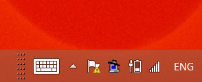 Start up Pageant (by clicking on pageant.exe which you downloaded). In your system tray, you’ll see the Pageant icon appear: A computer symbol with a hat on.
Step 2.
 Right-click the icon and select Add Key and select your private key (PPK) file. Enter your pass phrase. Now, your key is loaded in the Background and you can use FileZilla via the secure FTP protocol SFTP in the next step.
Right-click the icon and select Add Key and select your private key (PPK) file. Enter your pass phrase. Now, your key is loaded in the Background and you can use FileZilla via the secure FTP protocol SFTP in the next step.
Don’t forget to close Pageant when you’re done! Otherwise any user with access to your computer can easily gain access with your ssh key without having to type the ssh key passphrase. To close pageant, go to the system tray icon, right click and Exit pageant.
See also the pageant tutorial on digitalocean.
Creating a new user account
If you want to create a new user account on your VM, type in the following command in your ssh terminal:
sudo adduser <username>
replacing <username> with the username you would like to create. It will prompt you to create a password for this user, and type in their name and contact details.
If you would like to just create the user without specifying password and details, use
sudo useradd <username>
instead. You then can set the user password with:
sudo passwd <username>
It is recommended you use a random password initially, and then give it to the user, with the strong recommendation of changing it (a user cannot set their own initial password themselves, hence this initial step is required). Users can change their own password with:
passwd
You have now created a user with minimal privileges. For example, the user cannot perform administration tasks which require the sudo command prefix. If you would like to add privileges for this user, you can add it to certain privileges groups, e.g. the sudo group:
sudo adduser <username> sudo
The user can then use the sudo command to perform administrative tasks. They will have to type in their own password to execute sudo commands (this is a security measure in case they left their keyboard unattended).
To check the right groups the user is assigned to, type
id <username>
Each user should have their own ssh keys. Ask them to create it, using their passphrase of choice, and then send you their public key. Add their public key to your VM by following instructions here in this appendix.
Adding a new ssh key
If you want to use a new key to connect to the instance, you have to add it to the file authorized_keys on the user’s account. If you are adding another key for the ubuntu user, the <username> in the command below is ubuntu, otherwise it is the user name you want to add a key for.
First, create the .ssh directory for the user, if it does not exist yet (if it exists, this command will return an error):
sudo mkdir /home/<username>/.ssh
Then, edit the file authorized_keys
sudo nano /home/<username>/.ssh/authorized_keys
Paste the contents of your public key as one line into this file.
Tip: Copy the content of the public key by opening it with a text editor, marking all text and copying with CTRL+C. Then, go to your PuTTY Window which has the editor open for authorized_keys. Pasting the content will not work with CTRL+V on PuTTY, but instead, clicking the right or middle mouse button should paste the content.
Similarly, if you want to remove a key, you have to delete the line for that key from the authorized_key file on your instance.
Make sure that the directories and files have the correct ownership and access:
sudo chown -R <username> /home/<username>/.ssh
sudo chgrp -R <username> /home/<username>/.ssh
sudo chmod 700 /home/<username>/.ssh
sudo chmod 500 /home/<username>/.ssh/authorized_keys
SSH Tunnelling explained
SSH Tunnelling is best explained with an example. Imagine you’re on a private network with very conservative firewall rules which don’t allow connections to a specific server. For example, blockedsite.com is not accessible from your network. You can of course ask your system administrator to free up this site for you, but you may have to wait for the approval. To get around this firewall rule we can redirect our connection via a port that does not block this website: We can create a tunnel through a server which is not on our network and which can access blockedsite.com. We call this server the gateway.

Let’s say blockedsite.com uses the http protocol (as most websites do) through Port 80. Instead of connecting our port 80 to the blocksite.com’s port 80 (which would not work), we will redirect all traffic from our port 80 through the secure ssh port 22. This one will not be blocked by the firewall, and nobody will be able to decipher the traffic going through it (unless they get access to your private key and passphrase of course). On the gateway, our connection will come in at Port 22, and the ssh server will then redirect the traffic to port 80 on blockedsite.com. We call this technique local port forwarding. Of course, the connection between the gateway and the server of blockedsite.com is not encrypted; only the tunnel between our computer and the gateway is.
The technique of local port forwarding through an ssh tunnel can also be used to create a secure connection all the way to the destination server, so that there is no point at which the connection is not encrypted. In this case, the gateway is also the destination server itself.
As an example, we are going to discuss the setup for ssh tunneling on port 5900 on our instance (the default VNC port), using the gateway localhost. The example is for Mac and Linux. Observe that the gateway is localhost, because when we specify the destination server, it is also the gateway in this case (this can be a bit confusing, because you would guess we specify the gateway first… but actually we first specify the destination server, and then the gateway through which we want to create the tunnel. From the gateway’s point of view, the destination server is localhost). The tunnelled service will be available on our localhost, port 6000 (we use different numbers so you can distinguish it in the text below). We could do this for any other port numbers.
-
On your machine, create a tunnel from your machine (port 5900) to the other machine (port 5900)
ssh -i <your-key-name> -L 6000:localhost:5900 -N -f -l ubuntu NNN.NNN.NNN.NNN
replacing NNN.NNN.NNN.NNN with the IP address of the instance. -
On the instance: Install and start any service that will listen on port 5900 (e.g. the VNC Server).
-
A quick test should show you that you cannot actually directly connect to port 5900 on the instance:
telnet 144.6.227.50 5900
This will try connect you to the remote port (without any useful application, but it’s a good way to test whether the port is open). The shell should just say “trying to connect…” but nothing happens: Because we have not allowed access to port 5900 from outside… only via the SSH tunnel! And the ssh tunnel is accessible via our localhost. End the connect trying with Ctrl+C. Instead, try:
telnet localhost 6000
or
nc -v -w 5 localhost -z 6000
And you should see a command prompt (no error). So now you are talking to the port and can specify commands specific to the server, but we don’t really want to do this now.
To quit the telnet command prompt: Hit Ctrl+] (control and the right-bracket). That will return you to a telnet command prompt. From there you can enter the quit command (typing q is sufficient) and you will be returned to your usual Windows command prompt.
If this still does not work, make sure there is a server listening on port 5900. Check this with:
sudo netstat -tulpn
There should be your service listed as “Listening” on the port you have meant it to provide its service. If your service is not listening on that port, it won’t be possible to connect to it either.
The ssh -L options are explained as follows.
Syntax:
-L <local-port-to-listen>:<remote-host>:<remote-port> <gateway>
-
-N : Do not execute a remote command i.e. just forward ports.
-
-f: Requests ssh to go to background just before command execution. Once password supplied it will go to background and you can use prompt for type commands on local system.
-
-l ubuntu: ubuntu is the user to log in as on the remote machine (sshserver.mydomain.com). Note: The -f -N options in the above command cause the tunnel to run in the background: once you have typed in the password, the command line prompt returns to your local shell. In this case, if you ever want to close your ssh connection, you have to kill the connection:
ps aux | grep ssh
Then, find your ssh tunneling command and note the number on the left, after your user name. To kill (close) the ssh tunnel, type:
kill <the-ssh-tunnel-process-number>
If you don’t use the -N -f options, you will be logged into an ssh terminal to your instance, and can use it as usual to type commands on your instance. If you type logout or close the terminal, the ssh tunnel will close as well.
This is the end of Module 7. Continue with Module 8